<!doctype html>
<html lang="en">
<head>
  <meta charset="utf-8">
  <meta name="viewport" content="width=device-width, initial-scale=1">
  <title>arxiv digest — 2026-09-16</title>
  <style>
:root {
  --bg: #ffffff;
  --fg: #1f2328;
  --muted: #59636e;
  --border: #d0d7de;
  --card: #f6f8fa;
  --link: #0969da;
}
body {
  max-width: 980px;
  margin: 0 auto;
  padding: 2rem 1rem 5rem;
  font-family: -apple-system, BlinkMacSystemFont, "Segoe UI", Helvetica, Arial, sans-serif;
  line-height: 1.55;
  color: var(--fg);
  background: var(--bg);
}
a { color: var(--link); }
img { max-width: 100%; height: auto; }
pre, code { background: var(--card); border-radius: 6px; }
pre { padding: 1rem; overflow-x: auto; }
blockquote { border-left: 4px solid var(--border); padding-left: 1rem; color: var(--muted); }
details { margin: 0.6rem 0; }
summary { cursor: pointer; font-weight: 600; }
.paper-figures-scroll {
  display: flex;
  gap: 1rem;
  overflow-x: auto;
  overscroll-behavior-x: contain;
  padding: 0.75rem 0.25rem 1rem;
  margin: 1rem 0 1.25rem;
  border-top: 1px solid var(--border);
  border-bottom: 1px solid var(--border);
  scroll-snap-type: x proximity;
}
.paper-figure-card {
  flex: 0 0 min(260px, 72vw);
  scroll-snap-align: start;
  background: var(--card);
  border: 1px solid var(--border);
  border-radius: 12px;
  padding: 0.55rem;
}
.paper-figure-card img {
  display: block;
  width: 100%;
  max-height: 240px;
  object-fit: contain;
  background: white;
  border-radius: 8px;
}
.paper-figure-caption {
  display: block;
  margin-top: 0.5rem;
  color: var(--muted);
  font-size: 0.85rem;
}
.figure-strip-hint {
  color: var(--muted);
  font-size: 0.9rem;
  margin-bottom: -0.3rem;
}
</style>
  <!-- MathJax: renders $...$ inline math and $$...$$ display math, plus
       \(...\) and \[...\]. Loaded from the official CDN; works offline
       once cached. Configured to skip code/pre blocks so arxiv IDs that
       look like dollar amounts don't get mangled. -->
  <script>
    window.MathJax = {
      tex: {
        inlineMath: [['$', '$'], ['\\(', '\\)']],
        displayMath: [['$$', '$$'], ['\\[', '\\]']],
        processEscapes: true,
        processEnvironments: true
      },
      options: {
        skipHtmlTags: ['script', 'noscript', 'style', 'textarea', 'pre', 'code'],
        ignoreHtmlClass: 'tex2jax_ignore',
        processHtmlClass: 'tex2jax_process'
      }
    };
  </script>
  <script id="MathJax-script" async
    src="https://cdn.jsdelivr.net/npm/mathjax@3/es5/tex-chtml.js"></script>
</head>
<body>
<header style="background-color: #333; color: white; padding: 15px; margin-bottom: 20px;">
  <h1 style="margin: 0; font-size: 24px;">
    <a href="https://ochelpan.github.io/arXiv_clean/" style="color: white; text-decoration: none;">Main</a>
  </h1>
</header>

<h1>Daily arXiv Report</h1>

<hr>
<p>
<a href="index.html">← Index</a>
 · <a href="papers_02.html">Next →</a>
</p>
<hr>

<h2>Papers 1–20</h2>
<p><a id="paper-2609.14228"></a></p>
<h3 id="vestigial-altermagnetism">⭐ <a href="http://arxiv.org/abs/2609.14228v1">Vestigial altermagnetism</a></h3>
<p><strong>Highlighted author(s):</strong> Johannes Knolle<br>
<strong>Authors:</strong> Peng Rao, Johannes Knolle<br>
<strong>Type:</strong> theory · <strong>Category:</strong> strongly correlated electrons · <strong>PDF:</strong> <a href="https://arxiv.org/pdf/2609.14228v1">https://arxiv.org/pdf/2609.14228v1</a><br>
<strong>Analysis basis:</strong> full PDF text, analyzed in chunks
<strong>Topic relevance:</strong> <code>Keldysh / 2PI / non-Gaussian methods</code> <strong>2/5</strong></p>
<div class="figure-strip-hint">↔ Scroll figures horizontally</div>
<div class="paper-figures-scroll">
<figure class="paper-figure-card">
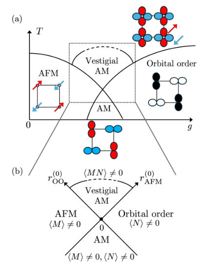
<figcaption class="paper-figure-caption"><b>Fig 1.</b> FIG. 1. (a) The phenomenological phase diagram as a function of temperature T and tuning parameter g. The x- and y-orbitals are shown as horizontal and vertical dumbbells. Red dumbbell means the electrons occupying the orbital are spin-up, and blue dumbbells are for spin-down electrons. Above the long-range ordered coexis- tence phase of the AM a distinct vestigial AM appears from thermal fluctuations. Along the dashed curve, the transition to the vestigial AM phase is first order. (b) the zoomed-in mean field phase diagram [gray box in (a)] as a function of the susceptibilities r(0) AFM, r(0) OO. The AFM and OO is present at r(0) AFM &lt; 0 and r(0) OO &lt; 0 respectively.</figcaption>
</figure>
<figure class="paper-figure-card">
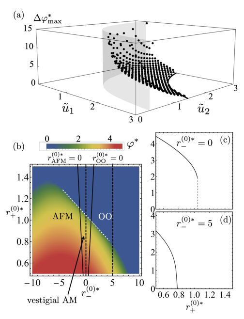
<figcaption class="paper-figure-caption"><b>Fig 2.</b> FIG. 2. (a) 3D point plot of the largest possible first-order disconti- nuity ∆φ∗ max from the disordered phase into the vestigial AM phase, as a function of reduced coupling constants ˜ui = ui/v. The gray vertical surface corresponds to the first of Eq. (6) beyond which the system becomes unstable. The black solid line is given by the sec- ond of Eq. (6) beyond which the transition is second order. (b) Phase diagram in r(0)∗ + , r(0)∗ − for ˜u1 = 1.6, ˜u2 = 1.9. r(0)∗ AFM = 0 (r(0)∗ OO = 0) is given by the left (right) black line; to its left (right) is the AFM (OO) phase. The region between the two black lines and the white dashed line is the vestigial AM phase. The transition is first...</figcaption>
</figure>
<figure class="paper-figure-card">
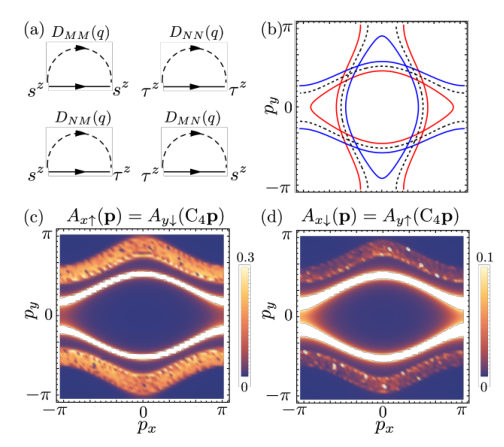
<figcaption class="paper-figure-caption"><b>Fig 3.</b> FIG. 3. (a) One-loop self-energy diagrams where the sz and τz ver- tices in Eq. (7) are shown explicitly. (b) The spin split Fermi surface given by H0 in Eq. (8) and Re ΣAM = 0.5tszτz where t is the nearest- neighbour hopping amplitude. Red is spin up and blue spin down. The black dashed lines correspond to no AM splittings. Spectral function for (c) spin-up and (d) spin-down electrons in orbital x with Re ΣAM = 0 at T = 0.05t. The spectral functions for y-orbitals are related by a C4 rotation and opposite spins. The inner contour corre- sponds to the x-orbital Fermi surface shown in black dashed line in (b). The outer ring is given by the inner ring shifted by Q = (π, π). The isolated...</figcaption>
</figure>
</div>

<p><strong>Summary.</strong> This work theoretically describes 'vestigial Altermagnetism,' a magnetic order that persists even after the individual magnetic and orbital orders responsible for it have melted due to temperature. By analyzing the phase diagram and calculating the electron spectral function, the authors predict unique, measurable signatures, such as spin- and orbital-dependent quasiparticle broadening, confirming the exotic nature of this emergent state.</p>
<p><strong>Why it may be interesting.</strong> The detailed calculation of electronic spectral functions and the prediction of anisotropic quasiparticle damping rates provide concrete, measurable signatures that can be sought in angle-resolved photoemission spectroscopy (ARPES) experiments on correlated materials.</p>
<details>
<summary>Detailed structure</summary>
<p><strong>Main problem.</strong> The paper investigates the emergence and properties of 'vestigial Altermagnetism' (AM) in systems where multiple magnetic and orbital orders compete and melt upon heating.</p>
<p><strong>Main result.</strong> A distinct vestigial AM phase with $\mathbf{Q}=0$ can arise from the thermal melting of coexisting Antiferromagnetic (AFM) and Orbital Orders (OO), and the transition into this phase can be first or second order.</p>
<p><strong>Method.</strong> The analysis employs Landau theory, mean-field approximations, and one-loop calculations to determine phase boundaries and calculate electronic spectral functions.</p>
<p><strong>Model / system.</strong> The study uses a minimal two-orbital model on a square lattice, extended in later sections to a three-orbital model, incorporating Hubbard and Hund's couplings.</p>
<p><strong>Key observables.</strong> The vestigial AM order parameter ($\phi$), the electron spectral function $A_{\lambda s}(p)$, and the quasiparticle lifetime ($\gamma$).</p>
<p><strong>Important parameters / regimes.</strong> Bare susceptibilities ($r(0)_{\text{AFM}}, r(0)_{\text{OO}}$), interaction coupling constants ($\tilde{u}_1, \tilde{u}_2$), and temperature ($T$).</p>
<p><strong>Assumptions / limitations.</strong> The analysis relies on mean-field decoupling of interactions and neglects higher-order fluctuation corrections (e.g., logarithmic terms).</p>
<p><strong>Figures summary.</strong> Figures illustrate phenomenological phase diagrams showing transition lines, and spectral function plots demonstrating spin- and orbital-dependent quasi-particle damping rates characteristic of the vestigial AM state.</p>
<p><strong>Paper structure.</strong> The paper progresses from establishing the mean-field description of the vestigial AM phase and its transition order (using Landau theory) to calculating the unique experimental signatures via the electron spectral function using one-loop self-energy corrections.</p>
</details>
<details>
<summary>Abstract</summary>
<p>Interaction effects and fluctuations govern the phase diagram of systems with multiple competing phases. In particular, as individual phases are destroyed by increasing temperature, fluctuations can still produce a composite <code>vestigial' order given by a product of individual order parameters. Here, we describe vestigial Altermagnetism (AM) from the thermal melting of antiferromagnetic (AFM) and orbital orders (OO) on the square lattice. The coexistence of AFM and OO can give rise to conventional AM with ordering wave vector $\mathbf{Q}=(π,π)$. We show that a distinct</code>vestigial AM' phase with $\mathbf{Q}=0$ can arise from thermal melting of AFM and OO, and investigate its generic phase diagram. We find that the transition from the high-temperature disordered phase into the vestigial AM phase can be either first or second order, depending on the AFM and OO bare susceptibilities and their interactions. We then investigate the unique experimental signatures by calculating the electron spectral function for a minimal two-orbital model. Despite the fact that the vestigial AM order parameter does not couple to electrons directly, fluctuations dominate the self-energy corrections giving rise to a spin- and orbital-dependent quasi-particle lifetime with the AM symmetry.</p>
</details>
<p><sub><a href="#top">↑ back to top</a></sub></p>

<p><a id="paper-2609.14705"></a></p>
<h3 id="rhombohedral-multilayer-graphene-as-a-math12math-wave-magnet">⭐ <a href="http://arxiv.org/abs/2609.14705v1">Rhombohedral Multilayer Graphene as a $p$-Wave Magnet</a></h3>
<p><strong>Highlighted author(s):</strong> Johannes Knolle<br>
<strong>Authors:</strong> Rintaro Eto, Johannes Knolle<br>
<strong>Type:</strong> theory · <strong>Category:</strong> strongly correlated electrons · <strong>PDF:</strong> <a href="https://arxiv.org/pdf/2609.14705v1">https://arxiv.org/pdf/2609.14705v1</a><br>
<strong>Analysis basis:</strong> full PDF text, analyzed in chunks
<strong>Topic relevance:</strong> <code>Keldysh / 2PI / non-Gaussian methods</code> <strong>1/5</strong> · <code>analog quantum simulation</code> <strong>1/5</strong></p>
<div class="figure-strip-hint">↔ Scroll figures horizontally</div>
<div class="paper-figures-scroll">
<figure class="paper-figure-card">
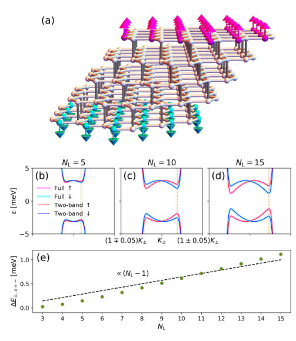
<figcaption class="paper-figure-caption"><b>Fig 1.</b> FIG. 1. (a) Schematic of rhombohedral multilayer graphene with ACBACB· · · stacking. Magenta and cyan arrows indicate the op- posite surface exchange fields associated with the layer AFM order. (b)–(d) Low-energy band dispersions obtained from the full tight- binding model (light colors) and the effective two-band model (dark colors) for NL = 5, 10, and 15, respectively. The effective-model dis- persions are shown only within the validity range |c0κ±,l/t1| &lt; 1 for all layers l. (e) Layer-number dependence of the spin splitting ∆E at the Mexican-hat edges of the valence bands, which are indicated by orange dashed lines in (b)–(d). The dashed line indicates the linear dependence on NL −1...</figcaption>
</figure>
<figure class="paper-figure-card">
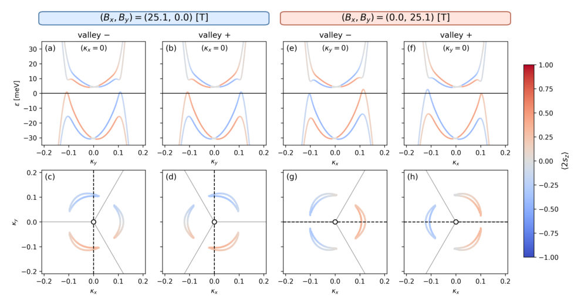
<figcaption class="paper-figure-caption"><b>Fig 2.</b> FIG. 2. Self-consistent Hartree-Fock results for hole-doped RMG Hubbard model with NL = 10 and ∆n = −(1/4NL) × 2 · 10−4 (= −3.82 · 1011 [cm−2]). (a),(b) Valley-resolved band dispersions for an in-plane field along the x direction, (Bx, By) = (25.1, 0) [T], plotted along κx = 0. (c),(d) Corresponding Fermi contours around the two valleys. (e),(f) Band dispersions for a field along the y direction, (Bx, By) = (0, 25.1) [T], plotted along κy = 0. (g),(h) Corresponding Fermi contours. The color scale represents the spin polarization ⟨σz⟩= ⟨2sz⟩. Solid gray lines indicate the high-symmetry directions through each valley. Black dashed lines in lower panels denote momentum paths used in the upper...</figcaption>
</figure>
<figure class="paper-figure-card">
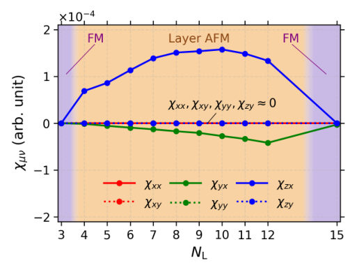
<figcaption class="paper-figure-caption"><b>Fig 3.</b> FIG. 3. Layer-number dependence of the magnetic Edelstein sus- ceptibility χµν for an in-plane field (Bx, By) = (0, 25.1) [T] and finite hole-doping of ∆n = −(1/4NL)×2·10−4 (= −3.82·1011 [cm−2]). The shaded regions indicate the magnetic ground states obtained from the self-consistent Hartree-Fock calculation: field-polarized ferromag- netic (FM) order for small and large NL and layer antiferromagnetic (AFM) order at intermediate NL. No converged solutions were ob- tained for NL = 13, 14, and these points are therefore omitted.</figcaption>
</figure>
<figure class="paper-figure-card">
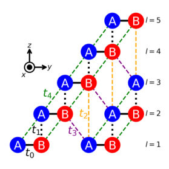
<figcaption class="paper-figure-caption"><b>Fig 4.</b> FIG. 4. Schematic of the tight-binding model of the RMG.</figcaption>
</figure>
<figure class="paper-figure-card">
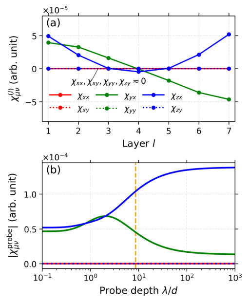
<figcaption class="paper-figure-caption"><b>Fig 5.</b> FIG. 5. (a) Layer dependence and (b) probe-depth dependence of the magnetic Edelstein effect for NL = 7, (Bx, By) = (0, 25.1) [T], and ∆n = −(1/4NL) × 2 · 10−4 (= −3.82 · 1011 [cm−2]). In (b), the layer sensitivity is assumed to decay exponentially from the top layer, and the orange dashed line indicates the probe depth at which the sensitivity to the bottom layer is half that to the top layer.</figcaption>
</figure>
</div>

<p><strong>Summary.</strong> This work establishes rhombohedral multilayer graphene as a tunable platform for realizing nonrelativistic p-wave magnetism using only orbital coupling to an external magnetic field. The authors show that this field-induced magnetism is robust and scales predictably with the number of graphene layers. The findings are further supported by predicting a distinct magnetic Edelstein effect as a measurable transport signature.</p>
<p><strong>Why it may be interesting.</strong> The mechanism relies on orbital coupling to an external field to induce unconventional magnetism (p-wave) without needing intrinsic spin-orbit coupling, which is a key concept in designing quantum materials.</p>
<details>
<summary>Detailed structure</summary>
<p><strong>Main problem.</strong> To propose and demonstrate that rhombohedral multilayer graphene (RMG) in an applied in-plane magnetic field acts as a highly tunable platform for nonrelativistic collinear p-wave magnetism.</p>
<p><strong>Main result.</strong> The orbital coupling to the in-plane field, combined with interaction-driven layer antiferromagnetism, generates a field-induced nonrelativistic p-wave magnet whose spin splitting scales linearly with the layer number.</p>
<p><strong>Method.</strong> The study employs a minimal low-energy effective theory and later extends the analysis using a self-consistent Hartree-Fock solution of the Hubbard model.</p>
<p><strong>Model / system.</strong> The physical system is rhombohedral multilayer graphene (RMG). The theoretical framework involves modeling the electronic structure using tight-binding Hamiltonians, projecting to low-energy effective models, and analyzing stability using the Hubbard model.</p>
<p><strong>Key observables.</strong> p-wave spin splitting ($\Delta E$), magnetic Edelstein susceptibility ($\chi_{\mu
u}$), and layer-resolved contributions ($\chi^{(l)}_{\mu
u}$).</p>
<p><strong>Important parameters / regimes.</strong> In-plane magnetic field strength ($\mathbf{B}$), layer number ($N_L$), and doping level ($\Delta n$).</p>
<p><strong>Assumptions / limitations.</strong> Initial analyses omit the Zeeman coupling; the Hubbard model analysis uses the Hartree-Fock approximation.</p>
<p><strong>Figures summary.</strong> Figures illustrate the schematic of RMG stacking, low-energy band dispersions showing layer-number dependence of spin splitting, and the layer-number/probe-depth dependence of the magnetic Edelstein effect.</p>
<p><strong>Paper structure.</strong> The paper progresses from establishing the low-energy effective theory for the p-wave magnetism (using minimal models) to confirming its robustness using a more realistic Hubbard model, and finally detailing the transport signature via the layer-resolved magnetic Edelstein effect.</p>
</details>
<details>
<summary>Abstract</summary>
<p>We propose rhombohedral multilayer graphene in an applied in-plane magnetic field as a highly tunable platform for nonrelativistic collinear $p$-wave magnetism. The orbital coupling to the magnetic field breaks time-reversal symmetry and, together with interaction-driven layer antiferromagnetism, generates an odd-in-momentum spin splitting without relying on spin-orbit coupling. Using a minimal low-energy effective theory, we show that the resulting $p$-wave spin splitting is strongly enhanced with increasing layer number. This enhancement originates from the surface-localized nature of the low-energy states and their layer-dependent orbital coupling to the in-plane field. The Zeeman coupling only weakly perturbs this predominantly orbital-field-induced mechanism. We further estimate stability of the $p$-wave magnetism under hole-doping and distinct transport signature using a more realistic Hubbard model. Our results establish orbital coupling to an external magnetic field as a controllable route to odd-parity spin splitting in collinear magnets.</p>
</details>
<p><sub><a href="#top">↑ back to top</a></sub></p>

<p><a id="paper-2609.15935"></a></p>
<h3 id="strong-coupling-quantum-optics-in-free-space-with-holes-in-a-fermi-sea"><a href="http://arxiv.org/abs/2609.15935v1">Strong-coupling quantum optics in free space with holes in a Fermi sea</a></h3>
<p><strong>Authors:</strong> Hao Wang, Hayden C. Orth, Duo Xu, Emily J. Davis<br>
<strong>Type:</strong> theory · <strong>Category:</strong> other · <strong>PDF:</strong> <a href="https://arxiv.org/pdf/2609.15935v1">https://arxiv.org/pdf/2609.15935v1</a><br>
<strong>Analysis basis:</strong> full PDF text, analyzed in chunks
<strong>Topic relevance:</strong> 🔥 <code>free-space correlated emission</code> <strong>5/5</strong> · 🔥 <code>correlated / nonlocal dissipation</code> <strong>4/5</strong> · <code>Dicke superradiance</code> <strong>3/5</strong> · <code>analog quantum simulation</code> <strong>3/5</strong> · <code>Keldysh / 2PI / non-Gaussian methods</code> <strong>2/5</strong> · <code>methods for driven-dissipative</code> <strong>2/5</strong> · <code>Tavis-Cummings &amp; cavity-many-emitter</code> <strong>1/5</strong> · <code>driven-dissipative phase transition</code> <strong>1/5</strong> · <code>interference shaping light</code> <strong>1/5</strong> · <code>superradiant laser</code> <strong>1/5</strong></p>
<div class="figure-strip-hint">↔ Scroll figures horizontally</div>
<div class="paper-figures-scroll">
<figure class="paper-figure-card">
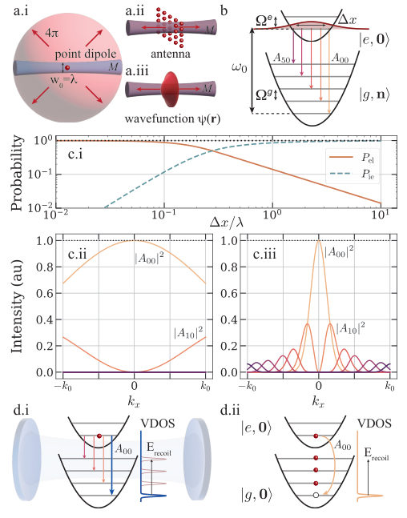
<figcaption class="paper-figure-caption"><b>Fig 1.</b> FIG. 1. Setup and overview: (a.i) A point atom driven by mode M of waist w0 = λ (blue) scatters photons into 4π steradians (red), with only a fraction Cpoint ≤3/2π2 scattered back into mode M. (ii) An antenna driven by mode M (blue) exhibits directed radiation (red, overlapping with blue to cre- ate violet). (iii) We study scattering from the center-of-mass wavefunction of a single atom with extent ≥λ. (b) A single trapped atom with internal states {|g⟩, |e⟩} (transition fre- quency ω0) and vibrational states n = (nx, ny, nz), spaced by state-dependent trap frequencies Ωg,e (only one dimension is shown for clarity). An atom in the state |e, 0⟩scatters into |g, n⟩with amplitude An0(k) (red...</figcaption>
</figure>
<figure class="paper-figure-card">
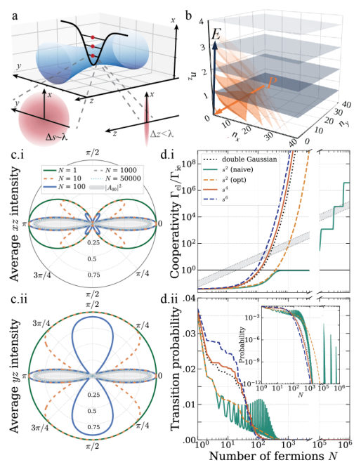
<figcaption class="paper-figure-caption"><b>Fig 2.</b> FIG. 2. Directed spontaneous emission from a disk- shaped atom: (a) Disk-shaped wavefunction and its directed emission into a Gaussian mode propagating along the z-axis. (b) Iso-energy (gray) and iso-probability (orange) surfaces in phase space for ηs = √</figcaption>
</figure>
<figure class="paper-figure-card">
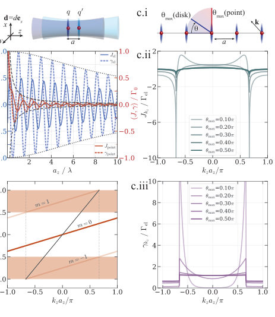
<figcaption class="paper-figure-caption"><b>Fig 3.</b> FIG. 3. Modified dipolar couplings for waveguide QED without a waveguide. (a.i) Two disk emitters (blue) and two point emitters (red). The disks scatter into Gaussian modes whose waists are separated by the emitter spacing a. (a.ii) The pairwise dipole-dipole interactions between two emitters, showing the real part J (solid) and imaginary part γ (dotted) for disk (ηs = √</figcaption>
</figure>
<figure class="paper-figure-card">
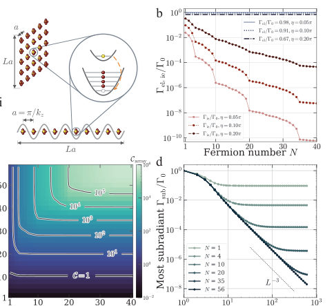
<figcaption class="paper-figure-caption"><b>Fig 4.</b> FIG. 4. Beyond Lamb-Dicke: enhanced light-matter interactions in atom arrays (a) Sketch of 2D array of side length La (i) and 1D chain of length La (ii), where each site q is a tight spherical trap containing N fermions. (b) Elas- tic and inelastic scattering rates in a single spherical trap η = 0.05π, 0.10π, 0.20π; there is a sharp decrease in inelas- tic scattering at N = 4, 10, 20, 35, ... whenever a new energy shell becomes fully filled. (c) Collective cooperativity for a 2D array of side length L of N-fermion ensembles for spherical traps η = π/10. Without suppression of inelastic scattering, the cooperativity remains small despite the increase in the size of the grid. (d) Linewidth...</figcaption>
</figure>
<figure class="paper-figure-card">
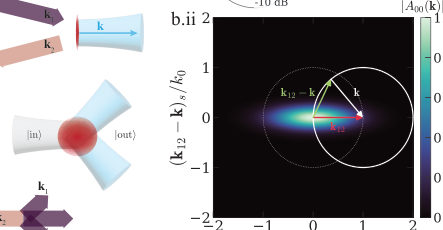
<figcaption class="paper-figure-caption"><b>Fig 5.</b> FIG. 5. Arbitrary emission via an external drive: (a) Four internal states e, s1, s2, g, coupled by two external driv- ing fields ΩR 1 , k1 and ΩR 2 , k2 (i), which induce a wavepacket antenna (red) to emit to the right (blue) when arranged as shown with k12 along +z. (ii). (b) Effect of k12 on sponta- neously emitted photons |s2⟩→|g, 0⟩. Radar plot (i) shows the unidirectional emission increasing to the right as k12 in- creases, with inset showing log scale. The effect of k12 is to shift the allowed momentum to the right in k-space (ii). When k12 is zero, photons are emitted on the dotted white circle; the transition probabilities |A00(k)|2 are symmetric. The drive k12 shifts the allowed...</figcaption>
</figure>
</div>

<p><strong>Summary.</strong> This paper presents a novel method to achieve strong, directed light-matter coupling in free space by engineering an atomic antenna from the wavefunction of multiple trapped fermions. By utilizing Pauli blocking, the authors suppress unwanted inelastic decay channels, enabling deterministic, highly directional spontaneous emission from a single atom. This work offers a pathway to realizing high-cooperativity quantum optics without relying on traditional optical cavities.</p>
<p><strong>Why it may be interesting.</strong> This work directly addresses fundamental open quantum system problems by using many-body quantum statistics (Pauli blocking) to engineer quantum optical phenomena (directional emission) in a highly controllable, solid-state-like environment (the trap).</p>
<details>
<summary>Detailed structure</summary>
<p><strong>Main problem.</strong> The primary challenge is achieving coherent and controlled light-matter interactions in free space, circumventing the need for engineered boundaries like optical cavities.</p>
<p><strong>Main result.</strong> The authors propose using quantum statistics (Pauli blocking) on an array of fermions to engineer a single-atom antenna that achieves directed spontaneous emission and high cooperativity in free space.</p>
<p><strong>Method.</strong> The analysis uses the Green's function approach and master equations, incorporating Pauli blocking effects derived from filling the lowest vibrational modes of a trap.</p>
<p><strong>Model / system.</strong> The system involves an atom trapped in a potential, where the collective behavior of multiple fermions (a Fermi sea) is used to modify the decay channels. The interaction is modeled via the dipole coupling to the free electromagnetic field.</p>
<p><strong>Key observables.</strong> Cooperativity (C), directed spontaneous emission rate, and modified dipole-dipole interactions.</p>
<p><strong>Important parameters / regimes.</strong> Fermion number (N), Lamb-Dicke parameter ($\eta$), and the ratio of elastic to inelastic decay rates.</p>
<p><strong>Assumptions / limitations.</strong> The approach relies on the ability of Pauli blocking to suppress inelastic decay channels, forcing emission into the desired elastic channel.</p>
<p><strong>Figures summary.</strong> Figures compare point dipole scattering (isotropic) versus antenna/wavepacket scattering (directed), and illustrate the mechanism of suppressing inelastic scattering via Pauli blocking.</p>
<p><strong>Paper structure.</strong> The paper progresses from the general need for free-space light-matter coupling, introduces the single-atom antenna concept, develops the theory using fermionic loading and Pauli blocking, and concludes by discussing extensions like arbitrary spatial emission.</p>
</details>
<details>
<summary>Abstract</summary>
<p>Coherent and efficient light-matter interfaces between an atom and a single mode of the electromagnetic field are essential for quantum technologies. Traditionally, these systems employ optical cavities or waveguides to isolate a specific mode of light, but a more recent approach is to engineer antennas from ordered configurations of trapped ultracold atoms that exhibit controllable and directed scattering. In this work, we propose a method to engineer an antenna from the center-of-mass wavefunction of a single atom, which can produce directed emission and thereby exhibit strong coupling to a target mode of light in free space. We predict that the resulting single-atom cooperativity can be comparable to the current state of the art in optical cavity and waveguide QED experiments. Building on this approach, we show that a wavepacket antenna becomes a single-atom mirror in the linear response regime. We study the modified dipole-dipole interactions and band structure of chains of such emitters, which can exhibit sub- and superradiance at spacings much larger than the wavelength of the light. Extending our approach to multi-level atoms, we propose a method to achieve arbitrary spatial scattering from a single atom, including uni-directional spontaneous emission. Finally, we elucidate how our approach can enhance cooperative scattering in conventional arrays of tightly trapped atoms.</p>
</details>
<p><sub><a href="#top">↑ back to top</a></sub></p>

<p><a id="paper-2609.15843"></a></p>
<h3 id="limits-on-the-atomic-description-of-four-wave-mixing"><a href="http://arxiv.org/abs/2609.15843v1">Limits on the atomic description of four-wave mixing</a></h3>
<p><strong>Authors:</strong> Irvin F. Ángeles-Aguillón, Nieves Arias-Téllez, Pablo Yanes-Thomas, Alejandro Kunold, Daniel Sahagún-Sánchez<br>
<strong>Type:</strong> both · <strong>Category:</strong> other · <strong>PDF:</strong> <a href="https://arxiv.org/pdf/2609.15843v1">https://arxiv.org/pdf/2609.15843v1</a><br>
<strong>Analysis basis:</strong> full PDF text, analyzed in chunks
<strong>Topic relevance:</strong> 🔥 <code>quantum optics experiment</code> <strong>4/5</strong> · <code>correlated / nonlocal dissipation</code> <strong>3/5</strong> · <code>methods for driven-dissipative</code> <strong>3/5</strong> · <code>analog quantum simulation</code> <strong>2/5</strong> · <code>driven-dissipative phase transition</code> <strong>2/5</strong> · <code>interference shaping light</code> <strong>2/5</strong> · <code>quantum measurements</code> <strong>2/5</strong> · <code>Dicke superradiance</code> <strong>1/5</strong> · <code>Full counting statistics</code> <strong>1/5</strong> · <code>Keldysh / 2PI / non-Gaussian methods</code> <strong>1/5</strong> · <code>Tavis-Cummings &amp; cavity-many-emitter</code> <strong>1/5</strong> · <code>free-space correlated emission</code> <strong>1/5</strong> · <code>non-equilibrium universality</code> <strong>1/5</strong></p>
<div class="figure-strip-hint">↔ Scroll figures horizontally</div>
<div class="paper-figures-scroll">
<figure class="paper-figure-card">
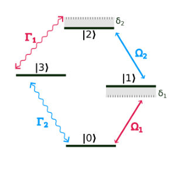
<figcaption class="paper-figure-caption"><b>Fig 1.</b> FIG. 1. Minimal illustration of the diamond configuration for four-wave mixing. The cyclic process begins with the two-step excitation |1⟩→|2⟩→|3⟩, driven by two laser beams with Rabi frequencies Ω1 and Ω2 and corresponding detunings δ1 and δ2, respectively. Signal and idler photons are generated through the cascade decay |3⟩→|2⟩→|1⟩, with decay rates Γ1 and Γ2. The transition colors indicate orthogonal polarizations. The state |0⟩represents the lower hyperfine level of the alkali-atom ground state.</figcaption>
</figure>
<figure class="paper-figure-card">
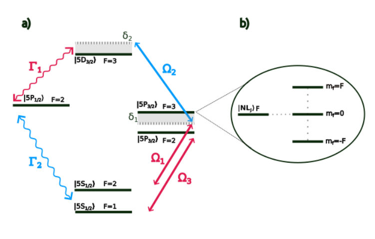
<figcaption class="paper-figure-caption"><b>Fig 2.</b> FIG. 2. Illustration of the complete atomic system considered in the model,IOP corresponding to a diamond configuration of transitions in 87Rb. (a) Relevant hyperfine levels, showing the two pump fields that drive the excitation transitions and the two spontaneous decay transitions, labeled by their corresponding wavelengths. (b) All mF projections included in the model. For clarity, only a representative subset of the excitation and decay transitions allowed by the corresponding selection rules is shown.</figcaption>
</figure>
<figure class="paper-figure-card">
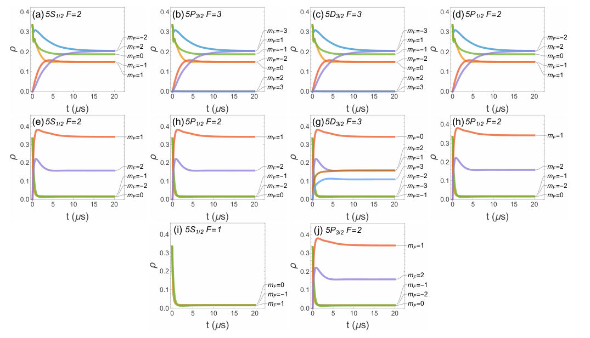
<figcaption class="paper-figure-caption"><b>Fig 3.</b> FIG. 3. Populations of all possible mF projections as a function of time. Panels (a)–(d) show the populations of the mF projections of the 5S1/2 F = 2, 5P3/2 F = 3, 5D3/2 F = 3, and 5P1/2 F = 2 levels without the re-pump laser. Panels (e)- (h) show the corresponding populations when the re-pump laser is included. Panels (i) and (j) show the populations of the auxiliary levels 5S1/2 F = 1 and 5P3/2 F = 2, which participate in the re-pump process. Results obtained via simulation with the MulAtoLEG Mathematica package.</figcaption>
</figure>
<figure class="paper-figure-card">
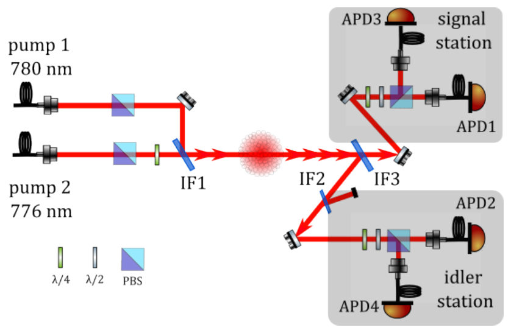
<figcaption class="paper-figure-caption"><b>Fig 4.</b> FIG. 4. Schematic of the experimental apparatus. Pump 1 and pump 2 (left) are delivered to the main experiment through optical fibers and stabilized using two saturated-absorption spectroscopy setups. Their polarizations are prepared to be linear and orthogonal, and the beams are overlapped at interference filter IF1 so that they co-propagate through the center of the magneto-optical trap. A combined beam containing four wavelengths exits the vacuum chamber on the opposite side. Interference filter IF3 transmits only the signal photons, which are directed to the first quantum-tomography station equipped with APD1 and APD3. The remaining pump light is subsequently filtered out by IF2, which...</figcaption>
</figure>
<figure class="paper-figure-card">
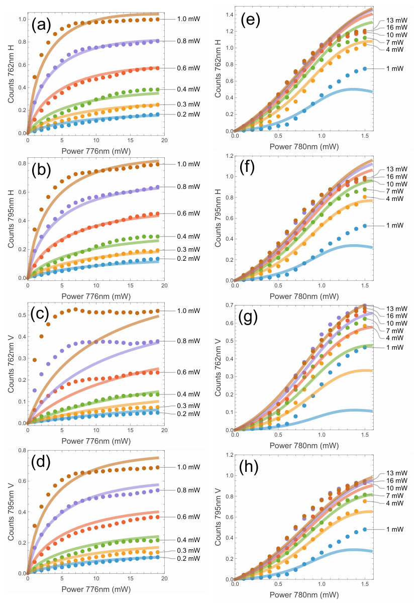
<figcaption class="paper-figure-caption"><b>Fig 5.</b> FIG. 5. Experimental and theoretical results for the normalized photon counts to the highest value in (a), organized by polarization and wavelength, as functions of P1 (780 nm) and P2 (776 nm). The theoretical calculations are based on the 32-level model. Panels (a), (b), (e), and (f) show the normalized counts for horizontal (H) polarization, while panels (c), (d), (g), and (h) show the normalized counts for vertical polarization. When the normalized counts are shown as a function of P1, multiple curves are plotted for different values of P2, and vice versa.</figcaption>
</figure>
</div>

<p><strong>Summary.</strong> This paper rigorously tests the single-atom model for four-wave mixing in cold atomic ensembles using polarization-resolved photon detection. The authors find excellent agreement for single-photon counts but observe systematic underestimation of coincidence rates for certain polarization channels. This discrepancy strongly suggests that collective atomic interactions, beyond individual level dynamics, are required for a complete theoretical description of the quantum light statistics.</p>
<p><strong>Why it may be interesting.</strong> This work is highly relevant as it pushes the boundaries of open quantum systems modeling in AMO physics, specifically addressing when simple single-particle descriptions fail and when collective, many-body interactions (like dipole-dipole coupling) must be incorporated.</p>
<details>
<summary>Detailed structure</summary>
<p><strong>Main problem.</strong> The study experimentally tests the limits of the single-atom model used to describe photon-pair generation via four-wave mixing (FWM) in cold atomic ensembles.</p>
<p><strong>Main result.</strong> While the single-atom model accurately predicts single-photon counts, it consistently underestimates the measured coincidence rates for certain polarization configurations, suggesting that collective phenomena are necessary for a full description.</p>
<p><strong>Method.</strong> The authors developed a comprehensive, high-level single-atom model incorporating all relevant hyperfine and Zeeman sublevels, solving the dynamics using the Lindblad master equation, and comparing predictions to polarization-resolved experimental measurements.</p>
<p><strong>Model / system.</strong> The system uses a cold-atom source (e.g., Rb in a MOT) undergoing FWM in a diamond configuration. The model is a detailed 32-level description solved via the Lindblad master equation, accounting for complex internal atomic structure.</p>
<p><strong>Key observables.</strong> Single-photon counts, coincidence rates ($G^{(2)}$) for various polarization channels (e.g., $G^{(2)}_{HV}$), and population dynamics of Zeeman sublevels.</p>
<p><strong>Important parameters / regimes.</strong> Pump laser powers, detunings ($\delta_1, \delta_2$), and the inclusion/exclusion of a re-pump laser field.</p>
<p><strong>Assumptions / limitations.</strong> The primary limitation/assumption tested is the validity of the single-atom approximation; the discrepancy points to the necessity of including collective effects.</p>
<p><strong>Figures summary.</strong> Figures illustrate the minimal diamond FWM configuration and the full 32-level atomic system for Rb, while other figures compare calculated photon counts and coincidence rates against experimental data across varying laser powers.</p>
<p><strong>Paper structure.</strong> The paper establishes the physical problem (FWM in atoms), details the advanced 32-level theoretical model (Hamiltonian, Lindblad equation), presents the experimental measurements (counts and coincidences), and concludes by comparing theory to experiment to identify the breakdown point of the single-atom approximation.</p>
</details>
<details>
<summary>Abstract</summary>
<p>The limits of the well-established single-atom model for describing photon-pair generation via four-wave mixing in a diamond configuration in atomic ensembles are experimentally tested. Using a cold-atom source, biphotons are generated and detected through polarization analyzers that resolve the emitted light into horizontal and vertical components in the laboratory frame. The pump lasers driving the first and second excitation transitions are horizontally and vertically polarized, respectively. To predict single-photon counts and coincidence rates in all polarization channels, the first- and second-order correlation functions are calculated directly using a comprehensive model that accounts for all Zeeman sublevels of the relevant hyperfine states. Furthermore, the population dynamics with and without the re-pump laser of the magneto-optical trap are compared, revealing substantial differences in the populations of the Zeeman sublevels. This motivates the inclusion of two additional hyperfine levels and their corresponding Zeeman sublevels in the final model. The resulting density matrix is used to calculate expectation values of the far-field electric-field operators and compare them with experimental measurements over a range of pump-laser powers. Excellent agreement with the measured photon counts is obtained over most of this range. For the coincidence measurements, good agreement is found when the polarization of the photon generated by the first (second) decay is parallel to that of the first (second) pump beam. In contrast, the model consistently underestimates the experimental coincidence rates for the opposite polarization configuration. These findings indicate that effects beyond the internal level dynamics of individual atoms, most notably collective phenomena, are required to fully account for photon coincidences generated by four-wave mixing in atomic ensembles.</p>
</details>
<p><sub><a href="#top">↑ back to top</a></sub></p>

<p><a id="paper-2609.14390"></a></p>
<h3 id="reservoir-conditioned-virtual-returns-generate-random-liouvillian-skin-localization-in-a-reciprocal-mott-insulator"><a href="http://arxiv.org/abs/2609.14390v1">Reservoir-conditioned virtual returns generate random Liouvillian skin localization in a reciprocal Mott insulator</a></h3>
<p><strong>Authors:</strong> Y. T. Wang, X. Z. Zhang, W. M. Liu<br>
<strong>Type:</strong> theory · <strong>Category:</strong> strongly correlated electrons · <strong>PDF:</strong> <a href="https://arxiv.org/pdf/2609.14390v1">https://arxiv.org/pdf/2609.14390v1</a><br>
<strong>Analysis basis:</strong> full PDF text, analyzed in chunks
<strong>Topic relevance:</strong> 🔥 <code>methods for driven-dissipative</code> <strong>4/5</strong> · <code>correlated / nonlocal dissipation</code> <strong>3/5</strong> · <code>driven-dissipative phase transition</code> <strong>3/5</strong> · <code>Keldysh / 2PI / non-Gaussian methods</code> <strong>2/5</strong> · <code>analog quantum simulation</code> <strong>2/5</strong> · <code>non-equilibrium universality</code> <strong>2/5</strong> · <code>quantum measurements</code> <strong>2/5</strong> · <code>scars &amp; prethermalization</code> <strong>1/5</strong></p>
<div class="figure-strip-hint">↔ Scroll figures horizontally</div>
<div class="paper-figures-scroll">
<figure class="paper-figure-card">
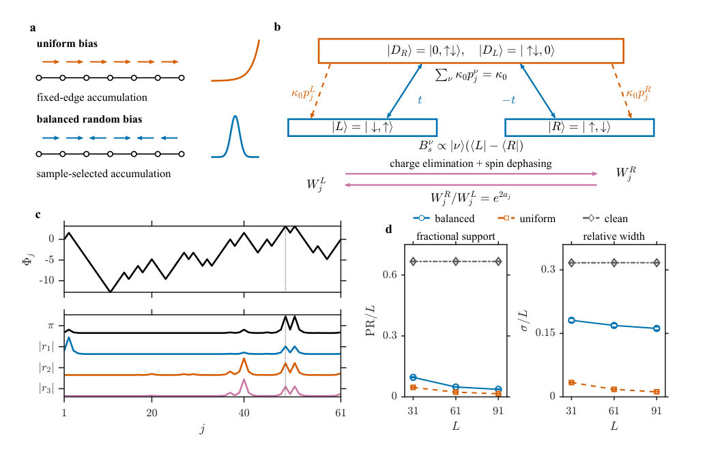
<figcaption class="paper-figure-caption"><b>Fig 1.</b> Figure 1: Virtual-state returns generate directional spin exchange and internal low-mode localization. a, Uniform and balanced random bond preferences illustrate fixed-edge and sample-selected accumulation. Arrows indicate the locally preferred exchange direction; the profile sketches are schematic. b, The grouped charge box contains two oriented source defects whose reservoir returns are environmentally distinguishable. Each defect is coupled coherently to both Mott states with amplitudes t, −t, and returns to either state with partial rate κ0pL,R j . The effective jumps retain both amplitudes. Only after Mott coherence is suppressed do they yield the directional population rates shown...</figcaption>
</figure>
<figure class="paper-figure-card">
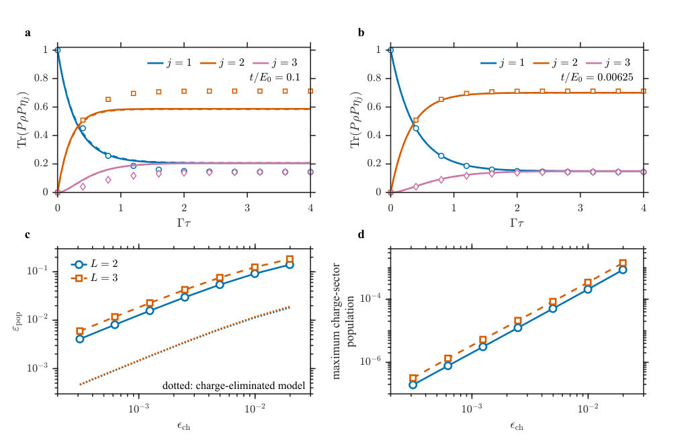
<figcaption class="paper-figure-caption"><b>Fig 2.</b> Figure 2: Full short-chain dynamics benchmarks the two controlled reductions on exchange times. a,b, Full L = 3, M = 1 dynamics (solid), charge-eliminated density-matrix model (dashed), and population generator (markers), with U/E0 = 10, κ0/E0 = 2, γm = t and (a1, a2) = (0.8, −0.8), at the indicated hopping. Initially the down spin occupies site 1 and all sites are singly occupied. Colors label sites, and τ denotes time. c, Maximum absolute configuration-population difference εpop from the full model on 81 uniformly spaced times 0 ≤Γτ ≤4, plotted against ϵch = t/√D0. Solid/dashed marker curves compare G for L = 2/3; dotted curves compare the coherent effective model. The two-site bond has...</figcaption>
</figure>
<figure class="paper-figure-card">
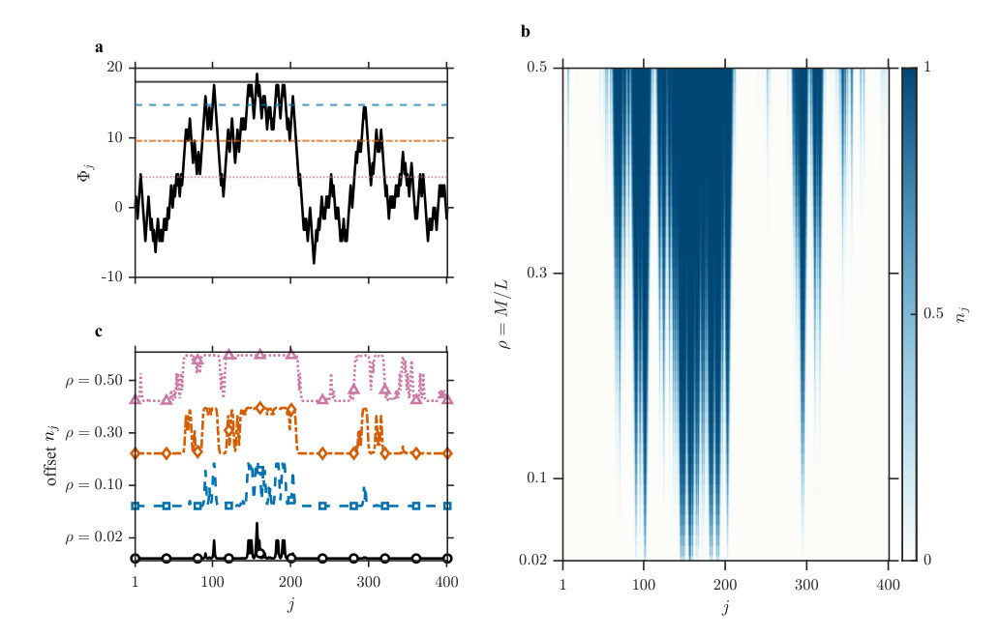
<figcaption class="paper-figure-caption"><b>Fig 3.</b> Figure 3: Hard-core exclusion converts the rate-generated landscape into an exact finite-density filling problem. a, Representative balanced profile with L = 401, a = 0.8. Lines mark the grand-canonical waterlines at M = 8, 40, 120, 201; density labels are rounded. b, Exact canonical density for 49 fillings between approximately 0.02 and 0.50 in the same sample. c, The four corresponding exact canonical density profiles, vertically offset for legibility. All calculations use reflecting boundaries. The displayed landscape is a representative fixed realization, not a disorder average; its complete bond sequence is supplied in Source Data.</figcaption>
</figure>
<figure class="paper-figure-card">
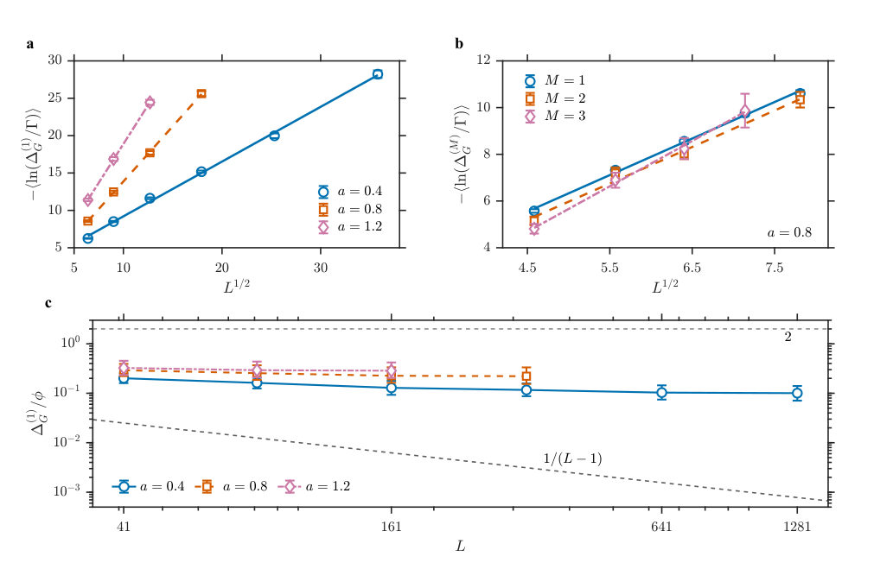
<figcaption class="paper-figure-caption"><b>Fig 4.</b> Figure 4: Random-walk barriers set the activated one-particle relaxation scale. a, Mean −log(∆(1) G /Γ) at a = 0.4, 0.8, 1.2; lines are free-intercept linear fits in √</figcaption>
</figure>
</div>

<p><strong>Summary.</strong> This work investigates how directional dissipation in a Mott insulator can be controlled by separating virtual charge motion from spin coherence. By analyzing the dynamics through a two-stage reduction, the authors show that random return processes induce random Liouvillian skin localization. This establishes a novel link between local return rates and the macroscopic control of quantum transport in constrained open systems.</p>
<p><strong>Why it may be interesting.</strong> It provides a detailed theoretical framework for controlling transport in open quantum systems by engineering local return rates, which is highly relevant for understanding dissipation in quantum materials.</p>
<details>
<summary>Detailed structure</summary>
<p><strong>Main problem.</strong> The paper aims to connect directional dissipation arising from virtual charge motion to controlled microscopic spin-exchange processes in correlated matter.</p>
<p><strong>Main result.</strong> Reservoir-conditioned virtual returns generate asymmetric Mott exchange, leading to random Liouvillian skin localization even when the end-to-end bias vanishes.</p>
<p><strong>Method.</strong> The study employs a two-stage reduction process on the Hubbard-Lindblad dynamics, separating charge defect elimination from Mott coherence suppression to derive effective population rate equations.</p>
<p><strong>Model / system.</strong> The system is a half-filled Hubbard chain with reciprocal hopping, analyzed using a full Hubbard-Lindblad dynamics approach, which is then reduced via timescale separation.</p>
<p><strong>Key observables.</strong> Random Liouvillian skin localization, asymmetric spin-exchange rates, finite-density hard-core stationary state, and one-particle activated relaxation scale.</p>
<p><strong>Important parameters / regimes.</strong> The analysis relies on a strict hierarchy of timescales ($t/\sqrt{D_0} \ll 1$, $\gamma_m/\kappa_0 \ll 1$, etc.) for the reduction to be valid.</p>
<p><strong>Assumptions / limitations.</strong> The derivation requires an explicit separation of timescales and assumes that the final rate ratios are robust even if source lifetimes are unequal.</p>
<p><strong>Figures summary.</strong> Figure 1 illustrates how balanced random returns cause sample-selected accumulation (random localization) compared to fixed-edge accumulation under uniform bias.</p>
<p><strong>Paper structure.</strong> The paper progresses by defining the full Hubbard-Lindblad dynamics, applying a two-stage reduction (charge elimination then coherence suppression), deriving the effective rate equations, and finally analyzing the resulting localization properties and stationary states.</p>
</details>
<details>
<summary>Abstract</summary>
<p>Directional dissipation can concentrate relaxation modes in space, but connecting this accumulation to controlled microscopic processes in correlated matter requires separating virtual charge motion from spin coherence. We study this connection in a half-filled Hubbard chain with reciprocal hopping and number-conserving, direction-selective returns of virtual doublon--hole defects. Eliminating charge defects and then Mott coherences yields asymmetric spin-exchange rates under an explicit separation of timescales, with full short-chain dynamics supporting the reduction on finite exchange times. Balanced random returns concentrate the stationary population and several low-lying right modes at sample-selected positions rather than a predetermined edge, producing random Liouvillian skin localization despite zero end-to-end logarithmic rate bias. The accumulated rate imbalance determines an exact finite-density hard-core stationary state and a one-particle activated relaxation scale governed by random barriers. This connection between locally calibrated return rates, many-body stationary weights and slow relaxation offers a means of controlling transport in constrained open quantum matter without changing the reciprocal Hamiltonian.</p>
</details>
<p><sub><a href="#top">↑ back to top</a></sub></p>

<p><a id="paper-2609.15351"></a></p>
<h3 id="state-dependent-diffusion-and-spectra-of-strongly-driven-thermal-atoms"><a href="http://arxiv.org/abs/2609.15351v1">State-Dependent Diffusion and Spectra of Strongly Driven Thermal Atoms</a></h3>
<p><strong>Authors:</strong> Zheng Xiao, Zijie Liu, Suyang Wei, Anhong Dang, Tiantian Shi, Jingbiao Chen<br>
<strong>Type:</strong> both · <strong>Category:</strong> other · <strong>PDF:</strong> <a href="https://arxiv.org/pdf/2609.15351v1">https://arxiv.org/pdf/2609.15351v1</a><br>
<strong>Analysis basis:</strong> full PDF text, analyzed in chunks
<strong>Topic relevance:</strong> 🔥 <code>methods for driven-dissipative</code> <strong>4/5</strong> · <code>Keldysh / 2PI / non-Gaussian methods</code> <strong>3/5</strong> · <code>driven-dissipative phase transition</code> <strong>3/5</strong> · <code>interference shaping light</code> <strong>3/5</strong> · <code>non-equilibrium universality</code> <strong>2/5</strong> · <code>quantum measurements</code> <strong>2/5</strong> · <code>correlated / nonlocal dissipation</code> <strong>1/5</strong></p>
<div class="figure-strip-hint">↔ Scroll figures horizontally</div>
<div class="paper-figures-scroll">
<figure class="paper-figure-card">
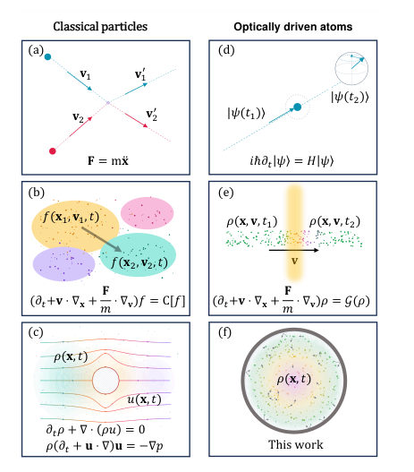
<figcaption class="paper-figure-caption"><b>Fig 1.</b> FIG. 1. Hierarchy of descriptions for classical particles (left column) and atoms interacting with light (right column). (a)–(c) Classical hierarchy: deterministic single-particle tra- jectories (a, Newtonian mechanics) →a phase-space distri- bution (b, Boltzmann equation) →macroscopic continuum fields (c, fluid dynamics). (d)–(f) Semiclassical atomic hi- erarchy: single-atom internal-state evolution (d, Schr¨odinger equation) →a trajectory-resolved density-matrix distribution (e, phase-space master equation) →a local density-matrix field (f, diffusion-form master equation). Both columns pro- ceed from a microscopic description through a kinetic descrip- tion to a macroscopic field...</figcaption>
</figure>
<figure class="paper-figure-card">
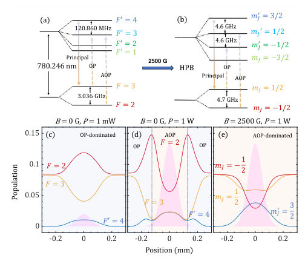
<figcaption class="paper-figure-caption"><b>Fig 2.</b> FIG. 2. Spatially resolved population dynamics of 85Rb driven near the 780.246-nm cycling transition. (a) Relevant zero-field hyperfine levels for the F = 3 →F ′ = 4 transi- tion. (b) Level structure in a 2500-G axial magnetic field, where the atom is in the hyperfine Paschen–Back regime and the states are grouped by mJ and m′ J. (c)–(e) Calculated position-dependent populations in a Gaussian beam: (c) 1 mW at zero magnetic field, (d) 1 W at zero magnetic field, and (e) 1 W in the hyperfine Paschen–Back regime. In the annotations, “Principal” identifies the principal transition; “OP” and “AOP” identify transitions or spatial regions dom- inated by conventional and anomalous optical pumping,...</figcaption>
</figure>
<figure class="paper-figure-card">
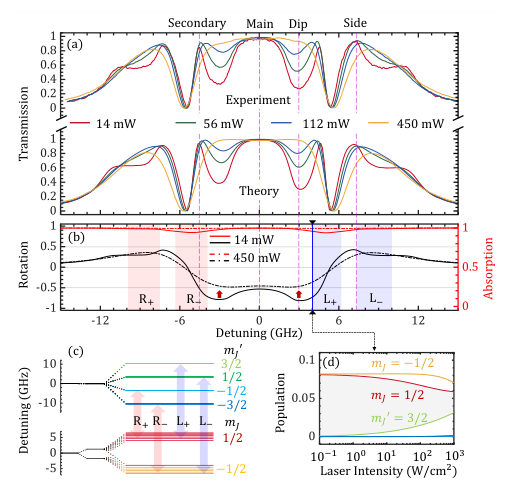
<figcaption class="paper-figure-caption"><b>Fig 3.</b> FIG. 4. 85Rb FADOF spectra in the hyperfine Paschen–Back regime. (a) Measured and calculated transmission spectra at 90 ◦C in an axial magnetic field with a mean value of 3700 G, for input powers from 14 to 450 mW. (b) Calculated polariza- tion rotation and absorption spectra. Transmission maxima occur near a π/2 rotation, whereas the spectral dip is associ- ated with rotation beyond π/2. (c) The four transition groups L+, L−, R+, and R−in the hyperfine Paschen–Back regime; their spectral positions are marked in (b). (d) Calculated populations of the relevant Zeeman-state groups as functions of laser intensity at the detuning indicated in (b).</figcaption>
</figure>
<figure class="paper-figure-card">
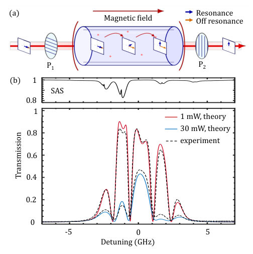
<figcaption class="paper-figure-caption"><b>Fig 4.</b> FIG. 3. (a) Operating principle of the Faraday atomic fil- ter. A linearly polarized beam traverses a vapor cell in an axial magnetic field and is transmitted by the crossed an- alyzer when the polarization rotation approaches π/2. (b) Measured saturated-absorption spectrum (SAS; upper panel) and transmission spectra of a 85Rb filter at 300 G and 50 ◦C (lower panel). The red and blue solid curves are the theo- retical spectra at input powers of 1 and 30 mW, respectively; the black dashed curves show the corresponding experimental spectra and nearly overlap at the two powers.</figcaption>
</figure>
</div>

<p><strong>Summary.</strong> This research develops a state-dependent diffusion model to describe the optical response of thermal atomic ensembles under intense laser driving. By analyzing the internal-state dynamics, the authors predict an anomalous optical-pumping mechanism that resists saturation. This framework is crucial for designing robust, high-performance atomic optical devices.</p>
<p><strong>Why it may be interesting.</strong> This work provides a powerful, generalized framework for modeling open quantum systems in the presence of strong driving fields, moving beyond simple scalar diffusion approximations by incorporating mode-dependent transport dictated by internal atomic states.</p>
<details>
<summary>Detailed structure</summary>
<p><strong>Main problem.</strong> The paper addresses deriving experimentally accessible continuum fields from the microscopic, state-dependent internal-state dynamics of a thermal ensemble of strongly driven atoms.</p>
<p><strong>Main result.</strong> The model reveals an anomalous optical-pumping pathway, enhanced by hyperfine Paschen-Back splitting, which allows the atomic filter to maintain high transmission ($\approx 97\%$) even at intensities far exceeding saturation levels.</p>
<p><strong>Method.</strong> The authors derive a closed spatial equation for the local density-matrix field using a velocity-moment expansion applied to the semiclassical phase-space master equation.</p>
<p><strong>Model / system.</strong> The system involves strongly driven thermal atoms (specifically $^{85}	ext{Rb}$) interacting with intense optical fields. The theoretical framework uses a density-matrix approach, evolving from a phase-space master equation to a diffusion-form master equation.</p>
<p><strong>Key observables.</strong> Local density-matrix field ($ar{\varrho}$), transmission spectra (Faraday anomalous-dispersion optical filter), and spatial population distributions.</p>
<p><strong>Important parameters / regimes.</strong> High light intensities (up to $1.27	imes10^{3}$ W/cm$^2$), hyperfine Paschen–Back splitting strength, and the ratio of spontaneous emission to driving field strength.</p>
<p><strong>Assumptions / limitations.</strong> The derivation relies on a velocity-moment expansion and assumes that collisions maintain a local Maxwell distribution, leading to a mode-dependent transport operator.</p>
<p><strong>Figures summary.</strong> Figures illustrate the reduction from the phase-space master equation to the local density-matrix field, show spatially resolved population dynamics under different magnetic fields, and display the FADOF transmission spectra at varying powers.</p>
<p><strong>Paper structure.</strong> The paper progresses from establishing the full phase-space kinetic equation, deriving the closed spatial equation for the local density-matrix field via moment expansion, analyzing the resulting transport dynamics, and finally validating the model against high-intensity experimental measurements of the atomic filter spectrum.</p>
</details>
<details>
<summary>Abstract</summary>
<p>We propose a state-dependent diffusion model for strongly driven thermal-atom spectra. Starting from the trajectory-dependent internal-state evolution of individual atoms, we derive a closed spatial equation for the local density-matrix field using a velocity-moment expansion. Measurements of an $^{85}$Rb atomic-filter transmission spectrum agree well with the model up to a maximum Gaussian peak intensity of $1.27\times10^{3}$ W/cm$^2$, approaching six orders of magnitude above the $^{85}$Rb D2-line saturation intensity. Counterintuitively, the model reveals an anomalous optical-pumping pathway in which intense light transfers atoms from nominally dark states into bright states. Hyperfine Paschen--Back splitting selectively enhances this anomalous pathway while suppressing conventional optical pumping, allowing the filter to maintain approximately 97$\%$ transmission at the highest intensity studied. This work provides a framework for controlling strongly driven atomic ensembles and designing saturation-resistant atomic optical devices.</p>
</details>
<p><sub><a href="#top">↑ back to top</a></sub></p>

<p><a id="paper-2609.13749"></a></p>
<h3 id="time-domain-non-linear-quantum-interferometry"><a href="http://arxiv.org/abs/2609.13749v1">Time domain non-linear quantum interferometry</a></h3>
<p><strong>Authors:</strong> C. Fruy, A. Théry, B. Hue, W. Legrand, L. Jarjat, J. Craquelin, M. R. Delbecq, A. Cottet, T. Kontos<br>
<strong>Type:</strong> experiment · <strong>Category:</strong> other · <strong>PDF:</strong> <a href="https://arxiv.org/pdf/2609.13749v1">https://arxiv.org/pdf/2609.13749v1</a><br>
<strong>Analysis basis:</strong> full PDF text, analyzed in chunks
<strong>Topic relevance:</strong> 🔥 <code>quantum measurements</code> <strong>4/5</strong> · <code>QC/QI experiment</code> <strong>3/5</strong> · <code>interference shaping light</code> <strong>3/5</strong> · <code>quantum optics experiment</code> <strong>3/5</strong> · <code>analog quantum simulation</code> <strong>2/5</strong> · <code>Tavis-Cummings &amp; cavity-many-emitter</code> <strong>1/5</strong> · <code>correlated / nonlocal dissipation</code> <strong>1/5</strong> · <code>driven-dissipative phase transition</code> <strong>1/5</strong></p>
<div class="figure-strip-hint">↔ Scroll figures horizontally</div>
<div class="paper-figures-scroll">
<figure class="paper-figure-card">
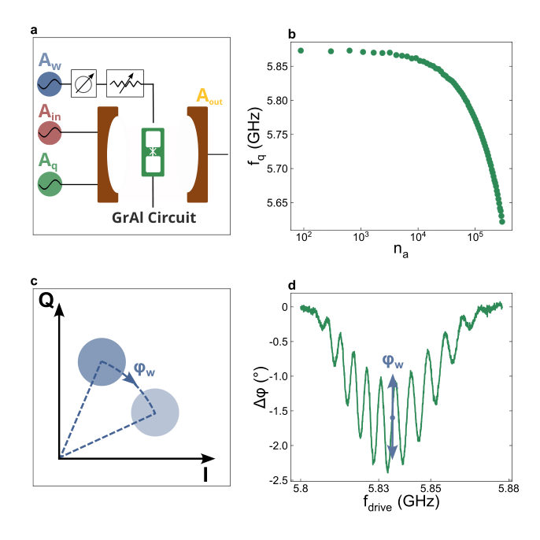
<figcaption class="paper-figure-caption"><b>Fig 1.</b> FIG. 1. Principle of the non-linear interferometer a. Block diagram of the non-linear interferometer setup with a cavity and a granular aluminium quantum circuit. The system is driven by 3 different microwave sources driving the circuit, the cavity and simulating the weak microwave signal to be detected. b. Measurement of the frequency dependence of the grAl circuit frequency as a function of cavity number of photons. c. Schematics of the effect of the weak microwave signal on the cavity field in the phase space representation for protocol B. d. Measured Ramsey fringes for the quantum circuit. The Ramsey sequence consists of two π/2 pulses separated by a free evolution period, during which...</figcaption>
</figure>
<figure class="paper-figure-card">
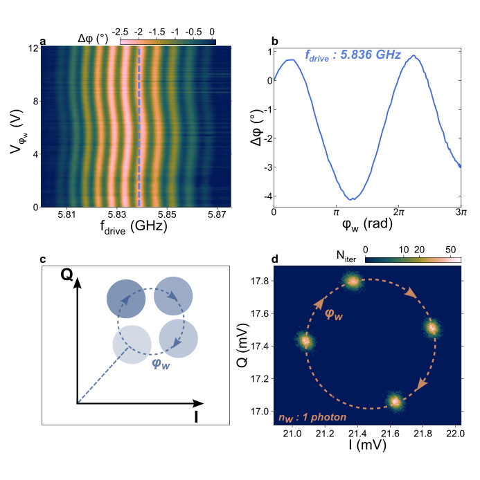
<figcaption class="paper-figure-caption"><b>Fig 2.</b> FIG. 2. Detection of a weak coherent field a. Evolution of the Ramsey fringes for nw = 0.6 photons as a function of the phase difference of the weak signal and the cavity field. The phase contrast outside the fringes has been subtracted. b. Phase signal corresponding to the vertical cut of signal for fdrive = 5.836GHz. In this case, the full signal is represented. This explains the differences in oscillation amplitude between panel (b) and panel (a). c. Schematics of the effect of the weak microwave signal on the cavity field in the phase space representation for protocol A. d. Measurement of the evolution of the state of the cavity field as the phase of the weak signal spans 2π for nw = 1...</figcaption>
</figure>
<figure class="paper-figure-card">
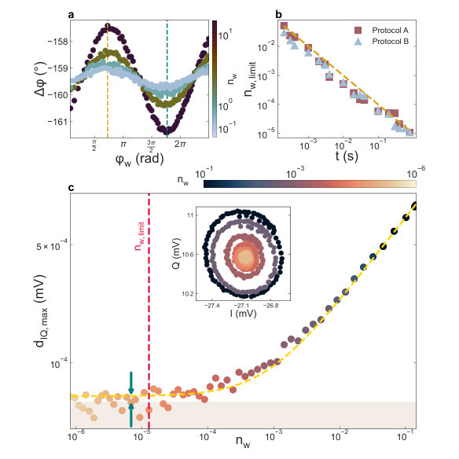
<figcaption class="paper-figure-caption"><b>Fig 3.</b> FIG. 3. Figure of merit of photon measurement a. Evolution of the contrast of the Ramsey signal for different values of nw. b. Scaling of the variance of the signal as a function of the measurement time for protocols A and B c. Evolution of the signal in the I-Q plane for protocol A down to nw ≈10−6</figcaption>
</figure>
<figure class="paper-figure-card">
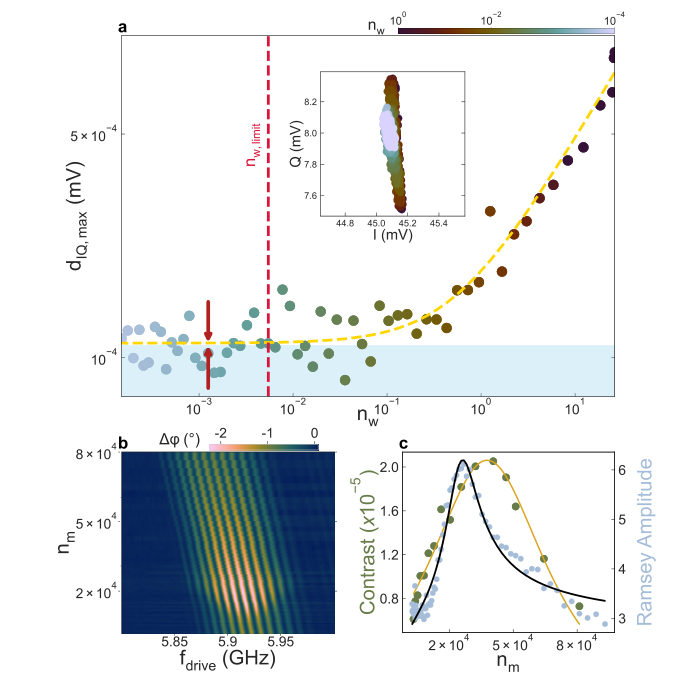
<figcaption class="paper-figure-caption"><b>Fig 4.</b> FIG. 4. Evading the shot noise limit a. Evolution of the contrast of the Ramsey signal for different values of nw for protocol B down to nw ≈10−4. For this non-resonant detection scheme, the trajectory of the state of the field in the I-Q plane is consistent with a piece of circle. The experiment is done at framsey = 5.919GHz. b. Evolution of the Ramsey fringes as a function of the pump power c. Evolution of the contrast as a function of the pump power. The Ramsey amplitude is fit with a lorentzian whereas the interferometer contrast is fit with a nonlinear function given the maintext.</figcaption>
</figure>
<figure class="paper-figure-card">
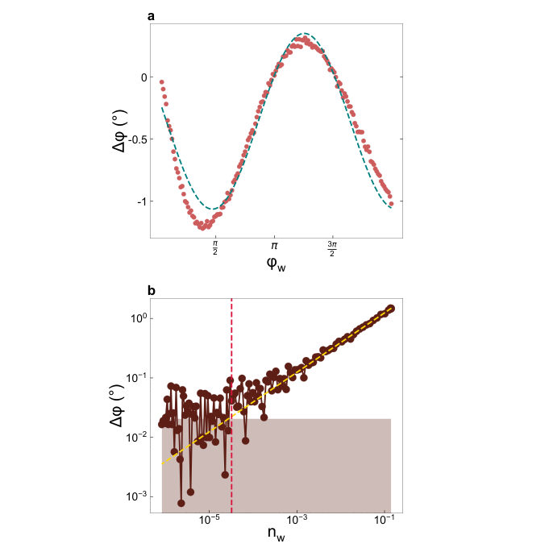
<figcaption class="paper-figure-caption"><b>Fig 5.</b> FIG. 5. Detecting at higher magnetic field a. Evolution of the Ramsey signal contrast for different values of nw using Protocol B, measured at nw ≈1 and B0 = 100 mT. b. Decrease of the Ramsey fringe contrast as nw is reduced, using Protocol B. A sensitivity limit of 5 × 10−4 photon is reached in a time of acquisition of 400ms.</figcaption>
</figure>
</div>

<p><strong>Summary.</strong> This paper demonstrates a non-linear quantum interferometer built using a superconducting circuit coupled to a microwave cavity. By exploiting anharmonicity, the system surpasses the shot noise limit, enabling the detection of extremely weak signals. The authors compare two measurement protocols, achieving high sensitivity for applications like dark matter detection.</p>
<p><strong>Why it may be interesting.</strong> This work is highly relevant as it pushes the boundaries of quantum measurement techniques in superconducting circuits, directly addressing noise limitations in quantum sensing using non-linear quantum optics.</p>
<details>
<summary>Detailed structure</summary>
<p><strong>Main problem.</strong> The primary goal is to implement and characterize a non-linear quantum interferometer capable of surpassing the standard quantum limit (shot noise limit) for detecting extremely weak quantum signals.</p>
<p><strong>Main result.</strong> The non-linear superconducting circuit enables the detection of weak signals down to photon numbers as low as $10^{-5}$, demonstrating a high figure of merit comparable to single-photon detectors.</p>
<p><strong>Method.</strong> The study employs two distinct interferometric protocols (Protocol A and Protocol B) using Ramsey sequences on a superconducting circuit coupled to a microwave cavity.</p>
<p><strong>Model / system.</strong> The physical platform is a microwave cavity quantum electrodynamics (cQED) system utilizing a granular aluminum (grAl) Josephson junction circuit, which provides the necessary anharmonicity for non-linear effects.</p>
<p><strong>Key observables.</strong> The key observables include the shift in Ramsey interference fringes, the diameter of the signal in the I-Q plane ($d_{IQ}$), and the measured frequency shift ($\Delta f_q$).</p>
<p><strong>Important parameters / regimes.</strong> Key parameters include the weak signal photon number ($n_w$), the measurement time ($t$), and the achievable sensitivity limit ($n_{w,lim} \approx 10^{-5}$).</p>
<p><strong>Assumptions / limitations.</strong> Assumptions include the validity of the input-output formalism, the characterization of the cross-Kerr parameter ($K_a q$), and acknowledging measurement-induced dephasing effects.</p>
<p><strong>Figures summary.</strong> Figures illustrate the principle of the non-linear interferometer, the evolution of Ramsey fringes as a function of the weak signal phase ($\phi_w$), and quantitative comparisons between Protocol A and Protocol B performance versus integration time.</p>
<p><strong>Paper structure.</strong> The paper details the theoretical framework (Hamiltonian, input-output formalism), presents two measurement protocols (A and B) for signal extraction, calibrates the measurement apparatus, and compares the sensitivity and scaling laws of both protocols.</p>
</details>
<details>
<summary>Abstract</summary>
<p>Interferometry is a powerful method for studying many fundamental phenomena ranging from gravitational waves to anyon excitations. Besides loss of coherence in the interferometer paths, quantum mechanics sets an incompressible bound for linear interferometry arising from the quantum noise of the light beam, called the shot noise limit. Here, we implement a non-linear quantum interferometer that uses a microwave cavity and a magnetic field resilient anharmonic superconducting quantum circuit made of granular aluminum. The circuit enables interferometry beyond the shot noise limit. A direct application of our findings is the detection of dark matter (axions or dark photons), high-frequency gravitational waves or astronomical masers.</p>
</details>
<p><sub><a href="#top">↑ back to top</a></sub></p>

<p><a id="paper-2609.15033"></a></p>
<h3 id="phase-sensitive-heterodyne-detection-of-mw-using-eit-harmonics-in-rydberg-atoms"><a href="http://arxiv.org/abs/2609.15033v1">Phase-Sensitive Heterodyne Detection of MW using EIT Harmonics in Rydberg Atoms</a></h3>
<p><strong>Authors:</strong> Mangesh Bhattarai, Rishav Hui, Sumanta Khan, Vineet Bharti, Vasant Natarajan, Kanhaiya Pandey<br>
<strong>Type:</strong> both · <strong>Category:</strong> other · <strong>PDF:</strong> <a href="https://arxiv.org/pdf/2609.15033v1">https://arxiv.org/pdf/2609.15033v1</a><br>
<strong>Analysis basis:</strong> full PDF text, analyzed in chunks
<strong>Topic relevance:</strong> 🔥 <code>quantum optics experiment</code> <strong>4/5</strong> · <code>Rydberg arrays</code> <strong>3/5</strong> · <code>analog quantum simulation</code> <strong>2/5</strong> · <code>interference shaping light</code> <strong>2/5</strong> · <code>methods for driven-dissipative</code> <strong>2/5</strong> · <code>quantum measurements</code> <strong>2/5</strong> · <code>Keldysh / 2PI / non-Gaussian methods</code> <strong>1/5</strong> · <code>driven-dissipative phase transition</code> <strong>1/5</strong></p>
<div class="figure-strip-hint">↔ Scroll figures horizontally</div>
<div class="paper-figures-scroll">
<figure class="paper-figure-card">
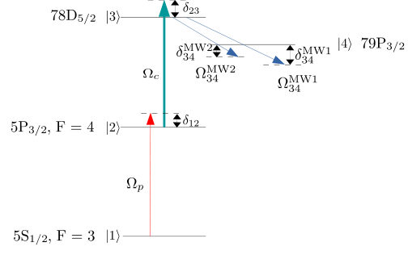
<figcaption class="paper-figure-caption"><b>Fig 1.</b> FIG. 1. Energy level diagram showing all the relevant states and the couplings.</figcaption>
</figure>
<figure class="paper-figure-card">
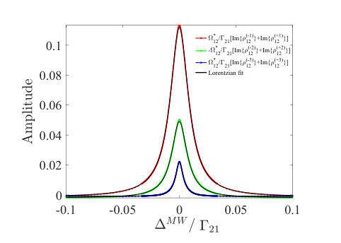
<figcaption class="paper-figure-caption"><b>Fig 2.</b> FIG. 4. Harmonics of the probe absorption vs beat frequency ∆MW /Γ21, for Ω12 = 1.0Γ21, Ω23 = 0.15Γ21, δ12 = δ23 = δMW 1 34 = 0 and ΩMW 1 34 = ΩMW 2 34 = 1Γ21 .The linewidth after the Lorentzian fit is 0.02Γ21, 0.02Γ21 and 0.01Γ21 for 1st, 2nd and 3rd harmonics respectively.</figcaption>
</figure>
<figure class="paper-figure-card">
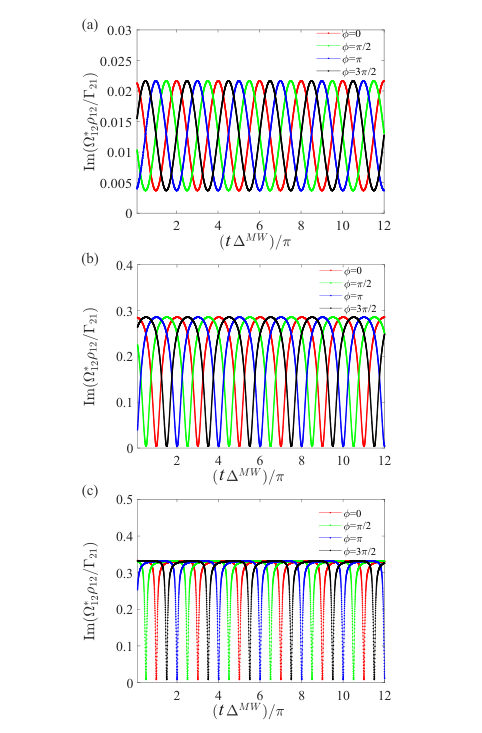
<figcaption class="paper-figure-caption"><b>Fig 3.</b> FIG. 2. Probe absorption rate, Im(Ω∗ 12ρ12/Γ21) vs time (t∆MW /π) with Ω12 = Γ21; Ω23 = 0.15Γ21, δ12 = δ23 = δMW 1 34 = 0. (a) ΩMW 1 34 = ΩMW 2 34 = 0.1Γ21.(b) ΩMW 1 34 = ΩMW 2 34 = 1Γ21. (c) ΩMW 1 34 = ΩMW 2 34 = 5Γ21.</figcaption>
</figure>
<figure class="paper-figure-card">
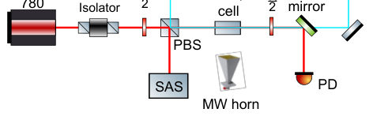
<figcaption class="paper-figure-caption"><b>Fig 4.</b> FIG. 5. Schematic of the experimental setup. Figure</figcaption>
</figure>
<figure class="paper-figure-card">
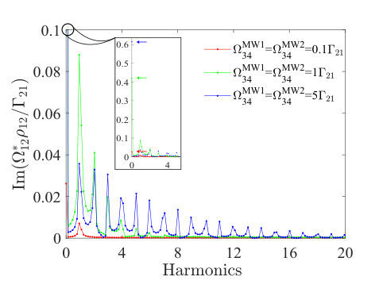
<figcaption class="paper-figure-caption"><b>Fig 5.</b> FIG. 3. Harmonics of the probe absorption, Im(Ω∗ 12ρ12/Γ21) for Ω12 = Γ21, Ω23 = 0.15Γ21, δ12 = δ23 = δMW 1 34 = 0 with various MW Rabi frequency mentioned on the labels. Inset shows larger Im(Ω∗ 12ρ12/Γ21) range to accommodate the 0th- order harmonic; the arrows point to these values.</figcaption>
</figure>
</div>

<p><strong>Summary.</strong> This research demonstrates a method for phase-sensitive microwave detection using Rydberg atoms in an EIT ladder system. By analyzing the higher-order harmonics generated in the probe absorption, the authors show that the phase of these harmonics scales linearly with the harmonic order. This technique offers an enhanced phase response compared to conventional electrometry.</p>
<p><strong>Why it may be interesting.</strong> This work provides a powerful, non-linear quantum optical technique to measure microwave phase shifts with enhanced sensitivity by leveraging high-order harmonic generation in Rydberg atoms, which is a key area in quantum sensing.</p>
<details>
<summary>Detailed structure</summary>
<p><strong>Main problem.</strong> The paper investigates generating and characterizing higher-order harmonics in the probe-laser absorption arising from nonlinear interactions within an Electromagnetically Induced Transparency (EIT) ladder system driven by two microwave fields.</p>
<p><strong>Main result.</strong> The detection method demonstrates phase multiplication, where the phase of the $n$-th harmonic follows $\phi_n = n\phi$, suggesting an enhanced phase response for phase-sensitive microwave measurements.</p>
<p><strong>Method.</strong> The study combines theoretical density-matrix calculations (using Floquet expansion) with experimental measurements of probe absorption as a function of microwave field detuning and phase.</p>
<p><strong>Model / system.</strong> The physical system utilizes Rydberg atoms in a ladder-type EIT configuration, driven by a probe laser, a control laser, and two microwave fields in a heterodyne setup. The dynamics are modeled using the Lindblad master equation.</p>
<p><strong>Key observables.</strong> Amplitude and phase of generated harmonics ($n=1, 2, 3, ...$), probe absorption rate, and the splitting of the EIT resonance ($\Omega_{MW}$).</p>
<p><strong>Important parameters / regimes.</strong> Relative frequency and phase of the applied microwave fields, and the ratio of measured bandwidths to the intrinsic Rydberg-state linewidth (showing power broadening).</p>
<p><strong>Assumptions / limitations.</strong> The analysis relies on the density matrix formalism and the Floquet expansion to treat the time-periodic driving fields.</p>
<p><strong>Figures summary.</strong> Figures illustrate the energy level diagram, the transition from sinusoidal to pulsed absorption as MW fields increase, and plots showing the harmonic absorption response versus beat frequency or detuning.</p>
<p><strong>Paper structure.</strong> The paper first establishes the nonlinear interaction mechanism in the EIT system, then details the theoretical framework using density matrices and Floquet analysis, and finally presents experimental measurements confirming harmonic generation and phase dependence.</p>
</details>
<details>
<summary>Abstract</summary>
<p>We investigate the generation and characterization of higher-order harmonics in the probe-laser absorption arising from nonlinear interactions in an electromagnetically induced transparency (EIT) ladder system involving Rydberg states and driven by two microwave fields in the heterodyne configuration. We characterize the amplitude and phase of the generated harmonics as a function of the relative frequency and phase of the applied microwave fields. The phase of the $n^{\mathrm{th}}$ harmonic follows the relation $φ_n=nφ$, demonstrating phase multiplication and suggesting that higher-order harmonics may offer an enhanced phase response for phase-sensitive measurements. We further characterize the harmonic amplitudes and bandwidths and find that the measured bandwidths are significantly larger than the intrinsic Rydberg-state linewidth, consistent with power broadening under the experimental conditions. The experimental observations are supported by density-matrix calculations, which reproduce the key features of the measured harmonic response.</p>
</details>
<p><sub><a href="#top">↑ back to top</a></sub></p>

<p><a id="paper-2609.15099"></a></p>
<h3 id="biorthogonal-time-dependent-variational-principle-for-non-hermitian-systems"><a href="http://arxiv.org/abs/2609.15099v1">Biorthogonal Time-Dependent Variational Principle for Non-Hermitian Systems</a></h3>
<p><strong>Authors:</strong> Younes Javanmard, Sina Kazemian<br>
<strong>Type:</strong> theory · <strong>Category:</strong> numerical methods · <strong>PDF:</strong> <a href="https://arxiv.org/pdf/2609.15099v1">https://arxiv.org/pdf/2609.15099v1</a><br>
<strong>Analysis basis:</strong> full PDF text, analyzed in chunks
<strong>Topic relevance:</strong> 🔥 <code>driven-dissipative phase transition</code> <strong>4/5</strong> · 🔥 <code>methods for driven-dissipative</code> <strong>4/5</strong> · <code>non-equilibrium universality</code> <strong>3/5</strong> · <code>Keldysh / 2PI / non-Gaussian methods</code> <strong>2/5</strong> · <code>analog quantum simulation</code> <strong>1/5</strong> · <code>correlated / nonlocal dissipation</code> <strong>1/5</strong> · <code>quantum measurements</code> <strong>1/5</strong></p>
<div class="figure-strip-hint">↔ Scroll figures horizontally</div>
<div class="paper-figures-scroll">
<figure class="paper-figure-card">
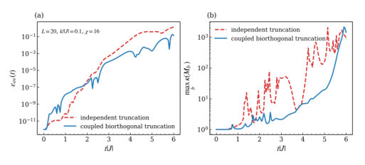
<figcaption class="paper-figure-caption"><b>Fig 1.</b> FIG. 2. Independent (red dashed) versus coupled biorthogo- nal truncation (blue) for the same long-range non-Hermitian Ising trajectory (L = 20, k/|J| = 0.1, χ = 16). (a) Rela- tive overlap drift. (b) Worst-bond condition number of the retained cross matrix. Joint truncation delays the loss of left- right compatibility.</figcaption>
</figure>
<figure class="paper-figure-card">
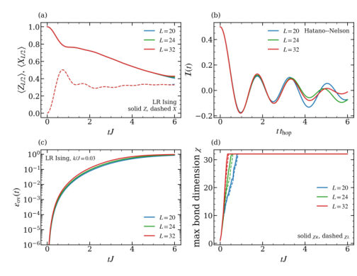
<figcaption class="paper-figure-caption"><b>Fig 2.</b> FIG. 1. Representative independently propagated MPS tra- jectories at L = 20, 24, 32 and χ = 32. (a) Long-range non-Hermitian Ising center-site observables at k/J = 0.03. (b) Hatano–Nelson imbalance. (c) Relative overlap drift of Eq. (18); it is a consistency diagnostic, not an observable- error bound. (d) Maximum left (dashed) and right (solid) bond dimensions.</figcaption>
</figure>
<figure class="paper-figure-card">
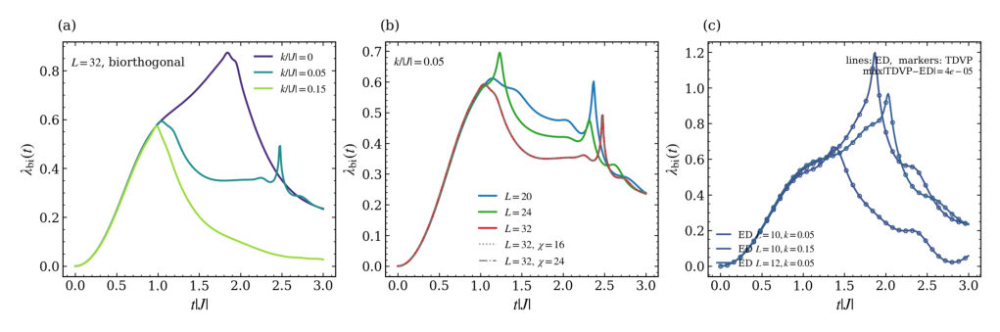
<figcaption class="paper-figure-caption"><b>Fig 3.</b> FIG. 3. Biorthogonal DQPT in the long-range non-Hermitian Ising chain. (a) Dependence on the imaginary field at L = 32: the leading cusp shifts from t∗|J| = 1.84 to 1.04 and broadens at stronger non-Hermiticity. (b) Size and bond-dimension convergence at k/|J| = 0.05. (c) Independent paired-TDVP validation against exact biorthogonal evolution.</figcaption>
</figure>
<figure class="paper-figure-card">
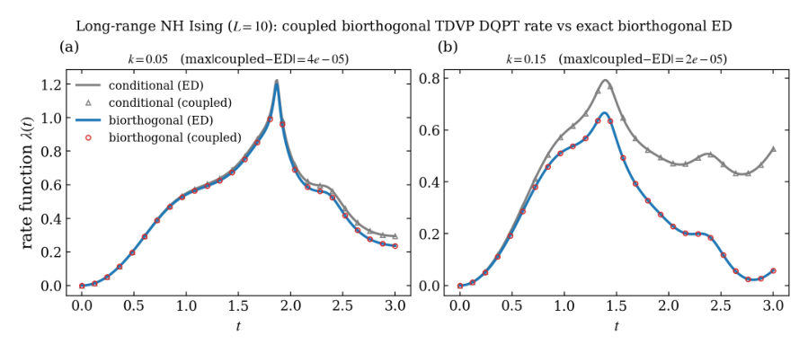
<figcaption class="paper-figure-caption"><b>Fig 4.</b> FIG. 4. Fully coupled oblique TDVP for the DQPT rate at L = 10. The coupled calculation (markers) reproduces exact biorthogonal ED (lines) through the cusp to 2–4 × 10−5 at (a) k/|J| = 0.05 and (b) 0.15. The conditional single-branch rate (gray) differs from the biorthogonal rate and is shown for comparison only.</figcaption>
</figure>
</div>

<p><strong>Summary.</strong> This paper introduces a biorthogonal Time-Dependent Variational Principle (TDVP) designed to simulate non-Hermitian quantum dynamics accurately. It rigorously compares fully coupled versus independently truncated algorithms, demonstrating that the coupled approach is necessary for maintaining numerical stability near critical points. The method successfully applies to study dynamical quantum phase transitions in models exhibiting gain and loss.</p>
<p><strong>Why it may be interesting.</strong> This work provides a state-of-the-art numerical tool for simulating non-Hermitian dynamics, which is crucial for modeling open quantum systems where gain/loss or measurement backaction are dominant effects.</p>
<details>
<summary>Detailed structure</summary>
<p><strong>Main problem.</strong> Developing a robust and efficient time-dependent variational principle (TDVP) for simulating the real-time dynamics of non-Hermitian quantum many-body systems.</p>
<p><strong>Main result.</strong> The fully coupled biorthogonal TDVP successfully resolves a dynamical quantum phase transition (DQPT) and maintains numerical stability significantly longer than independent approximation schemes.</p>
<p><strong>Method.</strong> The authors employ a biorthogonal TDVP framework, utilizing a matrix-free scaled Taylor action to propagate coupled left and right matrix-product states (MPS) in a manner that respects the non-Hermitian structure.</p>
<p><strong>Model / system.</strong> The method is applied to various non-Hermitian models, including the interacting long-range non-Hermitian Ising chain and the disordered Hatano-Nelson chain, which model open-system dynamics or gain/loss processes.</p>
<p><strong>Key observables.</strong> Biorthogonal expectation values, overlap drift ($\epsilon_{ov}(t)$), and the gauge-invariant biorthogonal return rate ($\lambda_{bi}(t)$).</p>
<p><strong>Important parameters / regimes.</strong> The critical time scale $t^*/|J|$, and the coupling strength $k$ in the Hamiltonian.</p>
<p><strong>Assumptions / limitations.</strong> The primary approximation is the use of the TDVP ansatz, and the comparison highlights the failure modes when independent truncation is used versus the coupled approach.</p>
<p><strong>Figures summary.</strong> Figures compare the performance of coupled vs. independent truncation schemes regarding overlap drift and show the successful tracking of a DQPT cusp using the coupled method.</p>
<p><strong>Paper structure.</strong> The paper introduces the biorthogonal TDVP, details the fully coupled vs. independent algorithmic implementations, validates the method against exact diagonalization (ED) benchmarks, and applies it to study DQPTs in specific non-Hermitian chains.</p>
</details>
<details>
<summary>Abstract</summary>
<p>We develop a biorthogonal time-dependent variational principle for real-time dynamics of non-Hermitian quantum many-body systems. Independent left and right matrix-product states obey coupled bivariational tangent-space equations whose cross-Gram matrix defines an oblique projection. A matrix-free scaled Taylor action propagates the resulting non-normal local generators without assembling dense matrices or storing a Krylov basis. We distinguish the fully coupled algorithm, which solves the cross-pairing problem and truncates the two bond bases jointly, from an efficient independently propagated approximation used for large systems. Independent truncation can make the retained left-right pairing nearly singular; overlap drift and the smallest singular value of the bond cross matrix expose this failure, while coupled truncation substantially delays it. Exact benchmarks and convergence tests validate the method. Applied to an interacting long-range non-Hermitian Ising chain, it resolves a biorthogonal dynamical quantum phase transition and shows that a weak imaginary field shifts the leading critical time from $t^{\ast}|J|=1.84$ to $1.04$.</p>
</details>
<p><sub><a href="#top">↑ back to top</a></sub></p>

<p><a id="paper-2609.14644"></a></p>
<h3 id="collective-dissipation-controlled-thermal-rectification-and-entropy-production-in-a-three-terminal-three-qubit-xxz-spin-chain"><a href="http://arxiv.org/abs/2609.14644v1">Collective-dissipation-controlled thermal rectification and entropy production in a three-terminal three-qubit XXZ spin chain</a></h3>
<p><strong>Authors:</strong> Alireza Nourmandipour<br>
<strong>Type:</strong> theory · <strong>Category:</strong> statistical mechanics · <strong>PDF:</strong> <a href="https://arxiv.org/pdf/2609.14644v1">https://arxiv.org/pdf/2609.14644v1</a><br>
<strong>Analysis basis:</strong> full PDF text, analyzed in chunks
<strong>Topic relevance:</strong> 🔥 <code>correlated / nonlocal dissipation</code> <strong>4/5</strong> · <code>driven-dissipative phase transition</code> <strong>3/5</strong> · <code>methods for driven-dissipative</code> <strong>3/5</strong> · <code>non-equilibrium universality</code> <strong>3/5</strong> · <code>analog quantum simulation</code> <strong>2/5</strong> · <code>Keldysh / 2PI / non-Gaussian methods</code> <strong>1/5</strong></p>
<div class="figure-strip-hint">↔ Scroll figures horizontally</div>
<div class="paper-figures-scroll">
<figure class="paper-figure-card">
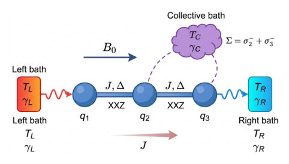
<figcaption class="paper-figure-caption"><b>Fig 1.</b> FIG. 1: Three-qubit XXZ spin chain coupled to local and collective thermal reservoirs. Qubits 1 and 3 are attached to boundary baths at temperatures TL and TR, respectively, while qubits 2 and 3 are jointly coupled to a common bath at temperature TC. The asymmetric col- lective dissipation constitutes the nonequilibrium control mechanism responsible for modifying the steady-state heat currents and enabling thermal rectification.</figcaption>
</figure>
<figure class="paper-figure-card">

<figcaption class="paper-figure-caption"><b>Fig 2.</b> FIG. 2: Steady-state heat currents in the three-qubit XXZ spin chain with local and collective dissipation. (a) JL versus TL for different collective couplings γC, with γL = γR = 0.1, TR = 1, TC = 1, ∆= 1. (b) Collective current JC (left axis) and collective-channel weight ηC (right axis) as functions of γC, with γL = γR = 0.1, TL = 1.5, TR = 0.5, TC = 1, ∆= 1. (c) JL, JR, and JC versus the collective- bath temperature TC, with γL = γR = 0.1, TL = 1.5, TR = 0.5, γC = 0.3, ∆= 1. (d) Boundary and collective currents as functions of the anisotropy parameter ∆, with γL = γR = 0.1, TL = 1.5, TR = 0.5, TC = 1, γC = 0.3. For all the plots B0 = 1 and all currents are in units of ω2.</figcaption>
</figure>
<figure class="paper-figure-card">
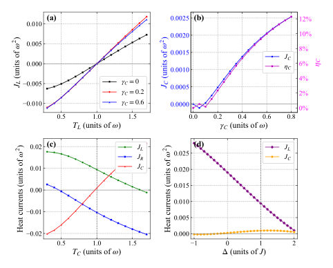
<figcaption class="paper-figure-caption"><b>Fig 3.</b> Figure 2 presents the steady-state heat currents for several representative parameter scans and illustrates how the collec- tive reservoir reshapes the transport pattern of the chain. We begin in Fig. 2(a) with the dependence of the currents on the left-bath temperature TL for different values of the collective coupling strength γC, with TR = 1 and TC = 1. In the ab- sence of collective dissipation, γC = 0, the system reduces to an effectively two-terminal configuration: the collective current vanishes, JC = 0, and the boundary currents satisfy JL = −JR. The sign change of the currents near the thermal symmetry point TL = 1 marks the crossover between opposite directions of net energy flow....</figcaption>
</figure>
<figure class="paper-figure-card">
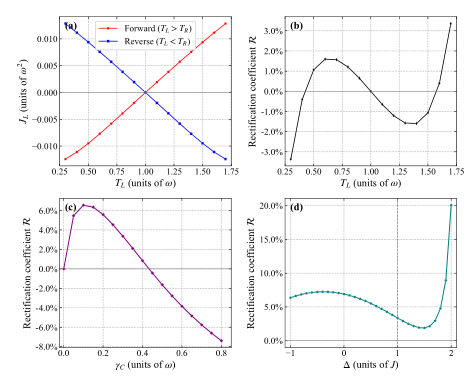
<figcaption class="paper-figure-caption"><b>Fig 4.</b> FIG. 3: Thermal rectification in the three-qubit XXZ chain with collective dissipation. (a) Heat current JL as a function of TL for forward bias (TL &gt; TR, red circles) and reverse bias (TL &lt; TR, blue squares), under the constraint TL + TR = 2, with γC = 0.3, ∆= 1, TC = 1, and γL = γR = 0.1. (b) Rectification coefficient R as a function of TL, reaching a maximum magnitude of about 3.36% at TL = 1.7 and TR = 0.3. (c) Rectification coefficient R as a function of the collective coupling strength γC, with fixed bias TL = 1.7, TR = 0.3, ∆= 1, and TC = 1. (d) Rectification coefficient R as a function of the anisotropy parameter ∆, with fixed bias TL = 1.7, TR = 0.3, γC = 0.3, and TC = 1. The positive sign of...</figcaption>
</figure>
<figure class="paper-figure-card">
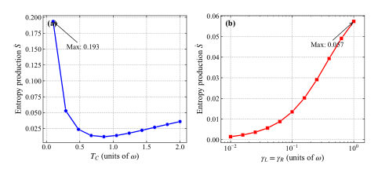
<figcaption class="paper-figure-caption"><b>Fig 5.</b> FIG. 4: Steady-state entropy production rate ˙Σ (in units of ω) as a function of environmental control parameters. (a) ˙Σ versus the collective-reservoir temperature TC on a linear scale, with fixed pa- rameters γL = γR = 0.1ω, TL = 1.5ω, TR = 0.5ω, γC = 0.3ω, and ∆= 1. (b) ˙Σ versus the symmetric local dissipation strengths γL = γR on a logarithmic scale, with fixed parameters TL = 1.5ω, TR = 0.5ω, TC = 1.0ω, γC = 0.3ω, and ∆= 1.</figcaption>
</figure>
</div>

<p><strong>Summary.</strong> This paper explores quantum heat transport in a three-qubit spin chain coupled to three distinct thermal baths. By analyzing the collective bath as a control knob, the authors demonstrate that dissipation can be actively tuned to enhance thermal rectification. Crucially, they map out a trade-off landscape, showing how to maximize energy asymmetry while simultaneously minimizing the associated thermodynamic cost quantified by entropy production.</p>
<p><strong>Why it may be interesting.</strong> This work directly addresses non-equilibrium thermodynamics in quantum systems, providing concrete examples of how engineered environmental coupling can optimize energy transport properties like rectification while managing thermodynamic irreversibility.</p>
<details>
<summary>Detailed structure</summary>
<p><strong>Main problem.</strong> The study investigates how engineered dissipation, specifically using a collective bath, can control thermal rectification and minimize the thermodynamic cost (entropy production) in a quantum heat transport system.</p>
<p><strong>Main result.</strong> The collective bath acts as a tunable control mechanism, allowing for the maximization of thermal rectification coefficients while simultaneously identifying operating windows that minimize irreversible entropy production.</p>
<p><strong>Method.</strong> The analysis employs the Lindblad master equation to model the open quantum system dynamics, calculating steady-state heat currents and the entropy production rate.</p>
<p><strong>Model / system.</strong> The system is a three-qubit XXZ spin chain coupled to three thermal reservoirs: two local baths and one collective bath. The dynamics are governed by the Lindblad master equation incorporating these three distinct dissipation channels.</p>
<p><strong>Key observables.</strong> Heat currents ($J_L, J_R, J_C$), thermal rectification coefficients ($R$), and the steady-state entropy production rate ($\dot{\Sigma}$).</p>
<p><strong>Important parameters / regimes.</strong> Anisotropy parameter ($\Delta$), local coupling strengths ($\gamma_L, \gamma_R$), and the temperature of the collective bath ($T_C$).</p>
<p><strong>Assumptions / limitations.</strong> The analysis is performed in the weak-coupling regime using the Lindblad master equation, and the characteristic frequency $\omega$ is often set to unity for simplicity.</p>
<p><strong>Figures summary.</strong> Figures illustrate the dependence of heat currents ($J_L, J_R, J_C$) on coupling strengths and temperatures, and show the non-monotonic behavior of rectification ($R$) and entropy production ($\dot{\Sigma}$) with respect to control parameters like $\gamma_C$, $T_C$, and $\Delta$.</p>
<p><strong>Paper structure.</strong> The paper systematically analyzes heat transport by first establishing the model and governing equations, then focusing on the steady-state heat currents and rectification, and finally quantifying the thermodynamic cost via the entropy production rate.</p>
</details>
<details>
<summary>Abstract</summary>
<p>We investigate thermal rectification and its thermodynamic cost in a three-qubit XXZ spin chain coupled to three thermal reservoirs: two local baths attached to the boundary qubits and a collective bath jointly coupled to the middle and right qubits. This asymmetric dissipative architecture allows the collective environment to actively reshape energy transport. We show that the heat current carried by the collective bath changes sign as its temperature is varied, and that the spin-chain anisotropy provides an effective internal control parameter for suppressing the boundary heat currents. These features yield thermal rectification coefficients of about $3.36\%$ at maximum bias and up to $20.1\%$ in the strongly anisotropic regime, although the latter comes at the cost of severely reduced heat currents. Beyond rectification, we evaluate the steady-state entropy production rate and identify a low-irreversibility operating window near the collective-current reversal, whereas increasing the local boundary couplings monotonically raises the thermodynamic cost. Our results establish collective dissipation as a tunable control mechanism for quantum heat transport and uncover a nontrivial trade-off among rectification, heat-current magnitude, and irreversible losses.</p>
</details>
<p><sub><a href="#top">↑ back to top</a></sub></p>

<p><a id="paper-2609.15345"></a></p>
<h3 id="improving-precision-scaling-via-backaction-evading-continuous-measurement-in-a-driven-dissipative-kerr-parametric-oscillator"><a href="http://arxiv.org/abs/2609.15345v1">Improving precision scaling via backaction-evading continuous measurement in a driven-dissipative Kerr parametric oscillator</a></h3>
<p><strong>Authors:</strong> Cheng Zhang, Xinhui Cui, Jiaying Pan, Xin-Qi Li, Mauro Cirio, Pengfei Liang<br>
<strong>Type:</strong> theory · <strong>Category:</strong> other · <strong>PDF:</strong> <a href="https://arxiv.org/pdf/2609.15345v1">https://arxiv.org/pdf/2609.15345v1</a><br>
<strong>Analysis basis:</strong> full PDF text, analyzed in chunks
<strong>Topic relevance:</strong> 🔥 <code>quantum measurements</code> <strong>4/5</strong> · <code>driven-dissipative phase transition</code> <strong>3/5</strong> · <code>non-equilibrium universality</code> <strong>3/5</strong> · <code>Keldysh / 2PI / non-Gaussian methods</code> <strong>2/5</strong> · <code>methods for driven-dissipative</code> <strong>2/5</strong> · <code>Tavis-Cummings &amp; cavity-many-emitter</code> <strong>1/5</strong> · <code>correlated / nonlocal dissipation</code> <strong>1/5</strong></p>
<div class="figure-strip-hint">↔ Scroll figures horizontally</div>
<div class="paper-figures-scroll">
<figure class="paper-figure-card">
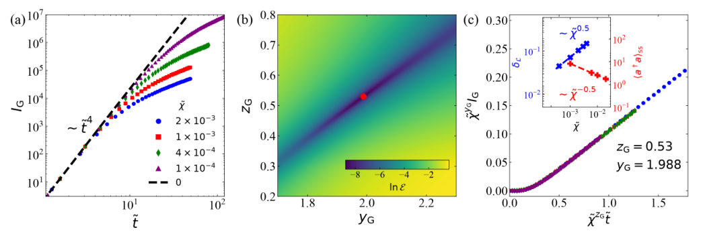
<figcaption class="paper-figure-caption"><b>Fig 1.</b> FIG. 1. (a) The global quantum Fisher information IG as a function of time at the dissipative critical point ˜ϵ = ˜ϵc(˜ω), for ˜ω = 1.0. The dashed line corresponds to the Gaussian case ˜χ = 0, while colored markers correspond to different non-zero values of the Kerr nonlinearity ˜χ ̸= 0. (b) Minimization of the scaled collapse error E to determine the optimal values of the exponents yG and zG (marked by the red dot). (c) Optimal collapse of the data from panel (a) using the scaling ansatz for IG in Eq. (24), with the exponents set to their optimal values (black texts) extracted in panel (b). The inset shows the Liouvillian gap δL (crosses) and the steady-state photon number ⟨a†a⟩ss (plus...</figcaption>
</figure>
<figure class="paper-figure-card">
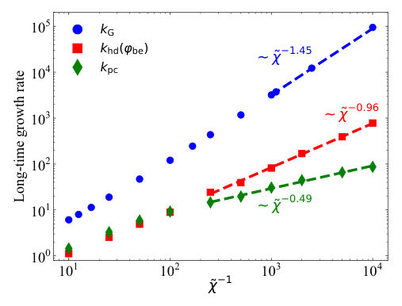
<figcaption class="paper-figure-caption"><b>Fig 2.</b> FIG. 2. Rates kG, khd(φbe) and kpc as functions of ˜χ−1 at the dissipative critical point ˜ϵ = ˜ϵc(˜ω) for ˜ω = 1.0. The data for khd(φbe) (squares) and kpc (diamonds) are obtained under the ideal detection condition η = 1. Data points corresponding to larger values of ˜χ−1 are fitted to extract the exponents γG = 1.45, γhd = 0.96 and γpc = 0.49, as demonstrated by the dashed lines. The points used for numerical fitting are those located within the lines.</figcaption>
</figure>
<figure class="paper-figure-card">
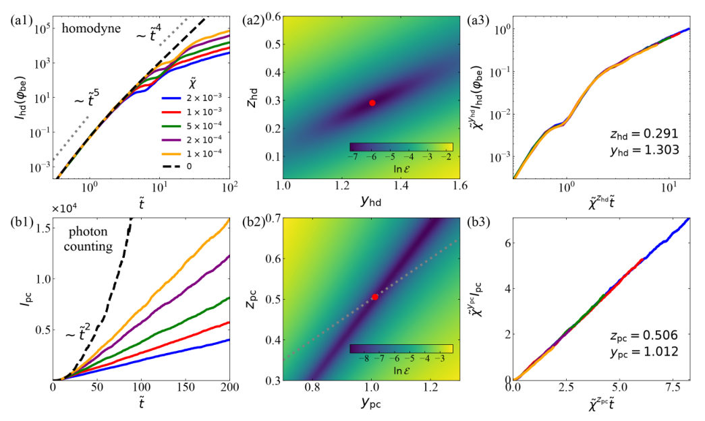
<figcaption class="paper-figure-caption"><b>Fig 3.</b> FIG. 3. Numerical analysis for the scaling of the classical Fisher information Ihd(φbe) for homodyne detection in panels (a1)-(a3), and Ipc for photon counting in panels (b1)-(b3). In particular, the data collapse performed in panels (a2) and (b2) is used to determine the optimal scaling exponents ys and zs for s = hd, pc explicitly shown in panels (a3) and (b3). All numerical data for the classical Fisher information are obtained at the dissipative critical point ˜ϵ = ˜ϵc(˜ω) with ˜ω = 1.0, under ideal detection condition η = 1. Panels (a1) and (c1) show Ihd(φbe) and Ipc as functions of time for selected finite ˜χ (solid lines). The Gaussian case ˜χ = 0 (dashed lines) is also shown, with...</figcaption>
</figure>
<figure class="paper-figure-card">
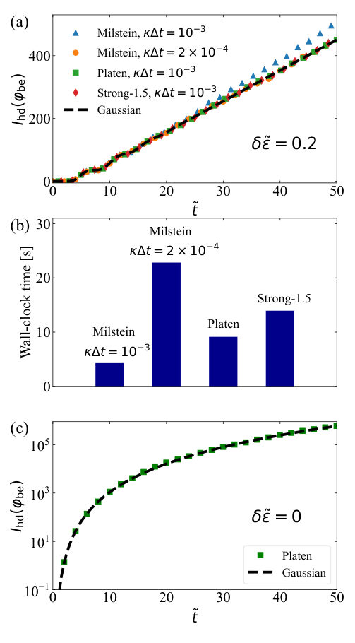
<figcaption class="paper-figure-caption"><b>Fig 4.</b> FIG. 4. The classical Fisher information for continuous homo- dyne detection, Ihd(φbe), in the limiting regime ˜χ = 0 and in the case of ideal detection η = 1 for (a) δ˜ϵ = 0.2 and (c) δ˜ϵ = 0. The detuning is fixed at ˜ω = 1.0. Symbols represent the results obtained from different time discrete approximations, while dashed lines correspond to the Gaussian approach detailed in Appendix B. In panel (a), 3600 trajectories are simulated for each approximation scheme with the Fock-state truncation set to Nfock = 60, whereas in panel (c) 5400 trajectories are used for ensemble average with Nfock = 600 and κ∆t = 5 × 10−5. (b) Average wall-clock time cost per trajectory of Θ for the results shown...</figcaption>
</figure>
</div>

<p><strong>Summary.</strong> This paper investigates quantum sensing in a Kerr parametric oscillator by analyzing continuous quantum measurements. It extends backaction-evading measurement techniques to account for Kerr nonlinearity, showing that homodyne monitoring achieves precision scaling beyond the standard quantum limit. The research provides advanced numerical methods for calculating the relevant Fisher information near dissipative critical points.</p>
<p><strong>Why it may be interesting.</strong> This work directly addresses quantum estimation theory in open quantum systems, specifically leveraging non-equilibrium dynamics near critical points, which is highly relevant to modern quantum optics and AMO research.</p>
<details>
<summary>Detailed structure</summary>
<p><strong>Main problem.</strong> The paper aims to improve the precision scaling of quantum sensing by analyzing backaction-evading continuous measurement strategies in a driven-dissipative system.</p>
<p><strong>Main result.</strong> Backaction-evading homodyne monitoring surpasses the standard quantum limit in enhancing photon-number scaling and outperforms continuous photon counting protocols.</p>
<p><strong>Method.</strong> The authors extend the backaction-evasion strategy to include Kerr nonlinearity and develop/benchmark time-discrete approximation schemes for computing the classical Fisher information.</p>
<p><strong>Model / system.</strong> The physical system is a driven-dissipative Kerr parametric oscillator (KPO), which is used as a minimal, experimentally relevant platform for studying quantum critical sensing.</p>
<p><strong>Key observables.</strong> Quantum Fisher Information (QFI), Classical Fisher Information (CFI), and the enhanced photon-number scaling.</p>
<p><strong>Important parameters / regimes.</strong> Kerr nonlinearity, detection efficiency ($\eta$), and proximity to the dissipative critical point ($\delta	ilde{\epsilon}$).</p>
<p><strong>Assumptions / limitations.</strong> The analysis extends previous work from the Gaussian linear case to include finite Kerr nonlinearity, and numerical methods rely on solving stochastic differential equations (SDEs).</p>
<p><strong>Figures summary.</strong> Figures compare the classical Fisher information $I_{hd}(\varphi)$ in off-critical regimes and demonstrate the convergence of $I_{hd}(\varphi_{be})$ at the critical point using the Platen scheme.</p>
<p><strong>Paper structure.</strong> The paper first establishes the theoretical framework using Stochastic Master Equations for continuous measurements (homodyne vs. photon counting). It then develops advanced numerical techniques to calculate the Fisher information near critical points, culminating in the demonstration of superior scaling using the backaction-evading homodyne protocol.</p>
</details>
<details>
<summary>Abstract</summary>
<p>Dissipative phase transitions in the driven-dissipative Kerr parametric oscillator offer a promising route for realizing criticality-enhanced quantum sensing based on continuous measurements. However, achieving such enhancement through realistic measurement schemes remains an outstanding challenge. Here, we extend the backaction-evasion strategy introduced in our earlier work for the Gaussian linear case [arXiv:2511.22248 (2025)] to analyze how the quantum and classical Fisher information scale with the Kerr nonlinearity at dissipative critical points. Our results show that backaction-evading homodyne monitoring achieves enhanced photon-number scaling that surpasses the standard quantum limit, and significantly outperforms alternative protocols such as continuous photon counting. As an additional methodological contribution, we also implement and benchmark time-discrete approximation schemes with improved statistical convergence properties. We use these methods to compute the classical Fisher information for continuous homodyne detection, and demonstrate that they provide efficient access to this quantity near dissipative critical points, thereby extending the reach of existing methods.</p>
</details>
<p><sub><a href="#top">↑ back to top</a></sub></p>

<p><a id="paper-2609.13456"></a></p>
<h3 id="reusable-selected-time-channels-for-quantum-simulation-of-non-markovian-dynamics"><a href="http://arxiv.org/abs/2609.13456v1">Reusable selected-time channels for quantum simulation of non-Markovian dynamics</a></h3>
<p><strong>Authors:</strong> Yusui Chen<br>
<strong>Type:</strong> theory · <strong>Category:</strong> other · <strong>PDF:</strong> <a href="https://arxiv.org/pdf/2609.13456v1">https://arxiv.org/pdf/2609.13456v1</a><br>
<strong>Analysis basis:</strong> full PDF text, analyzed in chunks
<strong>Topic relevance:</strong> 🔥 <code>methods for driven-dissipative</code> <strong>4/5</strong> · <code>correlated / nonlocal dissipation</code> <strong>3/5</strong> · <code>Keldysh / 2PI / non-Gaussian methods</code> <strong>2/5</strong> · <code>analog quantum simulation</code> <strong>2/5</strong> · <code>quantum measurements</code> <strong>2/5</strong> · <code>driven-dissipative phase transition</code> <strong>1/5</strong> · <code>non-equilibrium universality</code> <strong>1/5</strong></p>
<div class="figure-strip-hint">↔ Scroll figures horizontally</div>
<div class="paper-figures-scroll">
<figure class="paper-figure-card">
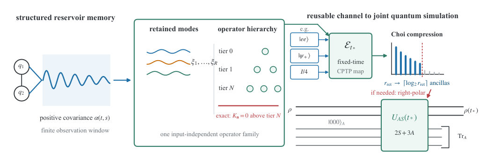
<figcaption class="paper-figure-caption"><b>Fig 1.</b> FIG. 1. From bath memory to a reusable channel and its logical Stinespring realization. A finite set of covariance modes carries independent Gaussian coordinates ξµ; Bargmann projection then gives one QSD operator hierarchy for all initial system states. For N qubits with excitation-conserving HS, vacuum reservoirs, and lowering couplings, Kn = 0 above tier N. The complete coefficient family defines Et∗for every input. Choi compression determines the ancilla width at the chosen cutoff (six directions and three ancillas here). If numerical propagation or thresholding gives a nonisometric Kraus stack, right-polar correction restores the isometry, provided the stack has full column rank. This...</figcaption>
</figure>
<figure class="paper-figure-card">
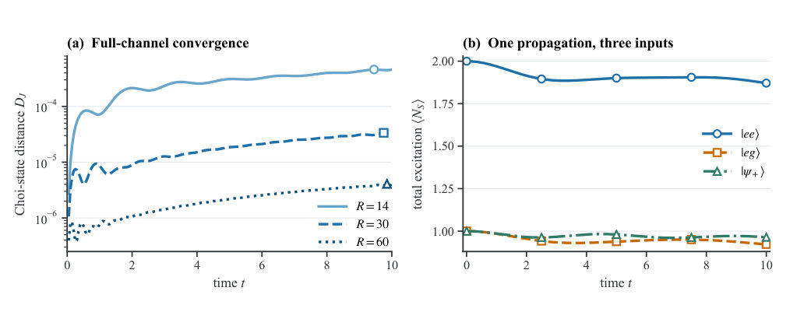
<figcaption class="paper-figure-caption"><b>Fig 2.</b> FIG. 2. Convergence and reuse of the reconstructed OU channel for Γ = 0.35 and γ = 0.1. (a) The normalized Choi-matrix diagnostic DJ [Eq. (43)] compares each finite-rank hierarchy channel with an independently propagated pseudomode reference for the full OU covariance. Each Choi matrix is Hermitized and divided by its own trace; in panel (a), the open symbols mark maxima over the stored times 0 ≤t ≤10. (b) One propagation of the input-independent hierarchy with R = 30 gives the channel at every plotted time; applying these maps to |ee⟩, |eg⟩, and |ψ+⟩≡(|eg⟩+ |ge⟩)/ √</figcaption>
</figure>
<figure class="paper-figure-card">

<figcaption class="paper-figure-caption"><b>Fig 3.</b> FIG. 3. Selected-time Choi compression and logical realization of the Ohmic channel. (a) The relative eigenvalue magnitudes |λi|/λ1 for the raw map’s Hermitized Choi matrix are shown at t∗= 5, with the horizontal line at 10−10. Upward triangles, open circles, and downward triangles identify positive, zero, and negative numerical-tail eigenvalues. (b) Right-polar correction and unitary completion realize the corrected rather than the raw thresholded channel.</figcaption>
</figure>
<figure class="paper-figure-card">

<figcaption class="paper-figure-caption"><b>Fig 4.</b> FIG. 4. Finite-temperature dynamics from |ee⟩and sensi- tivity to hierarchy depth and retained covariance rank, with θ ≡Tbath/[(ω1+ω2)/2]. (a) Pee(t) is shown at θ = 0, 0.5, 1, us- ing (R1, R2; Nh) = (16, 0; 2), (16, 8; 5), (16, 8; 6), respectively. (b) Ddepth measures the reduced-state half trace-norm change between Nh = 5 and 4 at θ = 0.5 and between Nh = 6 and 5 at θ = 1, with (R1, R2) = (16, 8). (c) Drank measures the corresponding change from (R1, R2) = (16, 8) to (20, 10) at Nh = 4 for θ = 0.5 and 1.</figcaption>
</figure>
</div>

<p><strong>Summary.</strong> This paper introduces a novel framework to simulate non-Markovian quantum dynamics by converting the stochastic Non-Markovian Quantum State Diffusion (NMQSD) propagator into a deterministic, input-independent Kraus quantum channel. By employing a finite-mode approximation of the bath memory, the authors create a bridge between the microscopic details of the environment and practical quantum circuit implementation. This allows for the efficient simulation of complex open quantum systems on quantum hardware.</p>
<p><strong>Why it may be interesting.</strong> This work is highly relevant as it provides a concrete, systematic pathway to simulate complex open quantum systems (non-Markovian dynamics) on near-term quantum hardware by translating continuous bath memory into a discrete, implementable quantum channel.</p>
<details>
<summary>Detailed structure</summary>
<p><strong>Main problem.</strong> The core problem is developing a method to construct a reusable, input-independent Kraus channel to simulate non-Markovian quantum dynamics, thereby bridging the gap between microscopic reservoir memory and practical quantum simulation.</p>
<p><strong>Main result.</strong> The authors develop a constructive framework that converts the Non-Markovian Quantum State Diffusion (NMQSD) propagator into a deterministic Kraus representation, which is shown to be independent of the initial state.</p>
<p><strong>Method.</strong> The method involves using a finite-mode approximation of the bath covariance kernel, derived via the Quantum Karhunen-Loève expansion, to project the dynamics onto a finite-dimensional auxiliary space.</p>
<p><strong>Model / system.</strong> The system consists of $N$ interacting qubits coupled linearly to bosonic reservoirs, described by a total Hamiltonian $H = H_S + H_B + H_{SB}$. The dynamics are non-Markovian, requiring methods beyond simple memoryless descriptions.</p>
<p><strong>Key observables.</strong> The reduced state $
ho_S(t)$, the bath correlation function $\alpha_{jk}(t, s)$, and the resulting Kraus operators $K_a(t)$ defining the channel $\mathcal{E}_t(
ho_0) = \sum_a K_a(t) 
ho_0 K_a^\dagger(t)$.</p>
<p><strong>Important parameters / regimes.</strong> The reservoir memory time scale, the finite rank $R$ used in the approximation, and the temperature $T_{bath}$ (analyzed at vacuum and finite temperatures).</p>
<p><strong>Assumptions / limitations.</strong> The primary assumption is the use of a finite-mode approximation of the bath covariance kernel, which introduces an error $\epsilon_\alpha(R)$.</p>
<p><strong>Figures summary.</strong> Figures summarize the construction flow from bath memory to the reusable channel realization, and later figures compare the evolution of the reduced state $\langle ee|
ho(t)|ee
angle$ across different temperatures and varying computational parameters (rank, depth).</p>
<p><strong>Paper structure.</strong> The paper progresses by first establishing the need for a reusable channel from NMQSD, then detailing the mathematical framework involving the Karhunen-Loève expansion for rank reduction, and finally validating the construction through specific qubit examples and sensitivity analyses.</p>
</details>
<details>
<summary>Abstract</summary>
<p>Non-Markovian quantum-state diffusion (QSD) provides a microscopic trajectory description of open-system dynamics, but trajectories associated with a chosen initial state are not directly reusable as quantum channels. We develop a constructive framework that converts the QSD propagator into an input-independent Kraus channel for a fixed bath preparation and a selected evolution time. The construction incorporates reservoir memory through a finite-mode approximation of the bath covariance and yields a deterministic channel representation that can be compressed for approximate implementation with a system-ancilla circuit. For the qubit systems considered here, the construction closes exactly in vacuum and extends systematically to finite temperatures. Two-qubit examples with structured reservoirs validate the vacuum channel construction, illustrate its finite-temperature extension for a chosen initial state, and show that the complexity of the reservoir description can differ substantially from the ancilla space required for quantum realization. The framework therefore establishes a direct bridge from microscopic reservoir memory to reusable non-Markovian quantum simulation and provides a foundation for optimized hardware implementations and extensions to larger systems and multitime dynamics.</p>
</details>
<p><sub><a href="#top">↑ back to top</a></sub></p>

<p><a id="paper-2609.14153"></a></p>
<h3 id="programmable-nonlinear-function-synthesis-on-a-photonic-processor-with-quantum-signal-processing"><a href="http://arxiv.org/abs/2609.14153v1">Programmable nonlinear function synthesis on a photonic processor with quantum signal processing</a></h3>
<p><strong>Authors:</strong> Elaheh Karooby, Masoud Hakimi Heris, Yuan Liu, Qing Gu<br>
<strong>Type:</strong> experiment · <strong>Category:</strong> quantum information and computing · <strong>PDF:</strong> <a href="https://arxiv.org/pdf/2609.14153v1">https://arxiv.org/pdf/2609.14153v1</a><br>
<strong>Analysis basis:</strong> full PDF text, analyzed in chunks
<strong>Topic relevance:</strong> 🔥 <code>QC/QI experiment</code> <strong>4/5</strong> · <code>analog quantum simulation</code> <strong>3/5</strong> · <code>quantum optics experiment</code> <strong>3/5</strong> · <code>interference shaping light</code> <strong>2/5</strong> · <code>methods for driven-dissipative</code> <strong>1/5</strong> · <code>quantum measurements</code> <strong>1/5</strong></p>
<div class="figure-strip-hint">↔ Scroll figures horizontally</div>
<div class="paper-figures-scroll">
<figure class="paper-figure-card">

<figcaption class="paper-figure-caption"><b>Fig 1.</b> Figure 1 | QSP applications and target nonlinear function synthesis. a, Representative application areas of QSP, ranging from quantum algorithms to quantum machine learning. b, A target nonlinear function is approximated by a finite trigonometric polynomial, and the correspond- ing QSP phase sequence {(θj, ϕj)}L j=0 is computed classically.</figcaption>
</figure>
<figure class="paper-figure-card">

<figcaption class="paper-figure-caption"><b>Fig 2.</b> Figure 2 | Algorithm-to-hardware mapping of QSP on a programmable PIC. a, Trigono- metric QSP circuit. Eq. (1): an initial signal-processing unitary A(θ0, ϕ0) followed by L layers, each interleaving the signal unitary Rz(x) with a signal-processing unitary A(θj, ϕj). The output is mea- sured through ⟨Z⟩= P(0) −P(1). b, Direct mapping of the QSP sequence onto native two-mode operations of a programmable interferometric PIC. Logical states are path-encoded, with the upper and lower waveguides representing |0⟩and |1⟩, respectively. Each A(θj, ϕj) is implemented by an MZI comprising two nominally 50:50 directional couplers (DCs) and programmable phase shifters (PSs), while Rz(x) is implemented...</figcaption>
</figure>
<figure class="paper-figure-card">

<figcaption class="paper-figure-caption"><b>Fig 3.</b> Figure 3 shows the experimental realization of the three functions. In the rectangular mesh of the</figcaption>
</figure>
<figure class="paper-figure-card">

<figcaption class="paper-figure-caption"><b>Fig 4.</b> Figure 3 | Experimental realization of STEP, ReLU, and SELU functions by photonic QSP. Reconstructed function f(x) = P(0) −P(1) versus input x for STEP (left column), ReLU (middle column), and SELU (right column) target functions, each shown at QSP circuit depths of L = 3 (top row), L = 7 (middle row), and L = 11 (bottom row). In each panel, the solid black line is the ideal target function, the dashed green line is the analytic prediction of the QSP, blue circles represent numerically simulated PIC behavior, and red squares show experimental results. Experimental data points are reconstructed from Nshots = 5000 heralded single-photon detection events per input value. For all three...</figcaption>
</figure>
<figure class="paper-figure-card">

<figcaption class="paper-figure-caption"><b>Fig 5.</b> Figure 4 | Error analysis of the photonic QSP implementation. a–c, MSE on a loga- rithmic scale as a function of QSP circuit depth L = 1, 3, 5, 7, 9, 11 for STEP, ReLU and SELU, respectively. The black dashed lines show the analytic MSE obtained from the analytic predic- tion of the QSP using the characterized directional-coupler splitting ratios, blue circles show the numerically simulated MSE of the PIC, red squares show the experimental MSE and green stars show the hardware MSE, defined as the MSE between the experimental result and the analytic prediction of QSP at the same depth. Each experimental point is obtained from 30 input values, with Nshots = 5000 heralded single-photon...</figcaption>
</figure>
</div>

<p><strong>Summary.</strong> This paper demonstrates how to program nonlinear functions on a photonic processor, despite the hardware being fundamentally linear. They achieve this by mapping the problem onto Quantum Signal Processing (QSP) theory and using single-photon encoding. The results confirm that repeated interference and encoding allow the linear hardware to emulate complex nonlinear behavior with high fidelity.</p>
<p><strong>Why it may be interesting.</strong> This work provides a concrete, hardware-validated pathway to implement complex, non-linear quantum computations using linear optical components, which is a major goal in photonic quantum computing.</p>
<details>
<summary>Detailed structure</summary>
<p><strong>Main problem.</strong> The core challenge is synthesizing complex, nonlinear input-output transformations on a photonic processor whose native operations are inherently linear.</p>
<p><strong>Main result.</strong> The authors successfully demonstrated an algorithm-to-hardware mapping, realizing and verifying programmable nonlinear functions (STEP, ReLU, SELU) using linear photonic hardware.</p>
<p><strong>Method.</strong> They employed Quantum Signal Processing (QSP) theory to map the desired nonlinear function onto a sequence of two-mode unitary operations achievable via programmable phase control in the photonic circuit.</p>
<p><strong>Model / system.</strong> The platform is a programmable photonic integrated circuit (PIC) utilizing dual-rail single-photon encoding and Mach-Zehnder Interferometers (MZIs). The QSP sequence is implemented by controlling programmable phase shifters.</p>
<p><strong>Key observables.</strong> Output probabilities P(0) and P(1), which are used to reconstruct the function $f(x) = P(0) - P(1)$; Mean-Squared Error (MSE) quantifying accuracy.</p>
<p><strong>Important parameters / regimes.</strong> Circuit depth $L$ (up to 11 demonstrated); hardware-induced mean squared errors ($10^{-3}$ to $10^{-2}$); input variable $x$ encoded as a phase difference.</p>
<p><strong>Assumptions / limitations.</strong> The underlying photonic transformation remains strictly linear; nonlinearity is achieved algorithmically through the QSP encoding and coherent interference.</p>
<p><strong>Figures summary.</strong> Figures illustrate the mapping from classical function synthesis to the QSP rotation sequence, the experimental realization on the PIC, and the reconstruction of the output function from measured probabilities.</p>
<p><strong>Paper structure.</strong> The paper establishes the theoretical mapping between QSP and two-mode photonic operations, details the experimental implementation using dual-rail encoding and programmable phase control, and validates the synthesis of specific nonlinear functions (STEP, ReLU, SELU) by measuring output probabilities.</p>
</details>
<details>
<summary>Abstract</summary>
<p>Programmable photonic integrated circuits are emerging as increasingly large and versatile interferometric processors operating at room temperature. However, their native operations are linear, while many computational tasks require nonlinear input-output transformations that typically rely on nonlinear optical materials or resonant devices. Here, we establish a direct mapping between quantum signal processing (QSP) and the native two-mode operations of programmable interferometric photonic integrated circuits, showing that the $SU(2)$ structure required by QSP can be realized through programmable phase control and mode mixing. We experimentally demonstrate this correspondence using dual-rail single-photon encoding on a 24-mode programmable photonic integrated circuit, realizing QSP sequences up to depth $L=11$ and synthesizing STEP, ReLU and SELU functions through programmable phase control. The optical transformation remains linear, while repeated encoding of the input variable and coherent interference produce a nonlinear dependence of the output probabilities on the encoded variable. Across all accessible circuit depths, the measured responses follow the programmed QSP transformations, with hardware-induced mean squared errors between $10^{-3}$ and $10^{-2}$, all remaining below the intrinsic finite-depth approximation error. These results establish an algorithm-to-hardware mapping of QSP on programmable photonic processors. They also demonstrate an algorithmic route to programmable nonlinear functions of encoded variables on linear photonic hardware.</p>
</details>
<p><sub><a href="#top">↑ back to top</a></sub></p>

<p><a id="paper-2609.14454"></a></p>
<h3 id="squeezing-measurement-with-spectrally-broadened-in-microstructured-fiber-local-oscillator"><a href="http://arxiv.org/abs/2609.14454v1">Squeezing measurement with spectrally broadened in microstructured fiber local oscillator</a></h3>
<p><strong>Authors:</strong> A. Chudakov, V. Severin, A. Poshevkina, A. Finochenko, K. Kuznetsov, A. Levchenko, E. Serebryannikov, A. Fedotov, D. Kalashnikov, P. Sharapova<br>
<strong>Type:</strong> experiment · <strong>Category:</strong> quantum information and computing · <strong>PDF:</strong> <a href="https://arxiv.org/pdf/2609.14454v1">https://arxiv.org/pdf/2609.14454v1</a><br>
<strong>Analysis basis:</strong> full PDF text, analyzed in chunks
<strong>Topic relevance:</strong> 🔥 <code>quantum optics experiment</code> <strong>4/5</strong> · <code>QC/QI experiment</code> <strong>3/5</strong> · <code>interference shaping light</code> <strong>3/5</strong> · <code>quantum measurements</code> <strong>3/5</strong></p>
<div class="figure-strip-hint">↔ Scroll figures horizontally</div>
<div class="paper-figures-scroll">
<figure class="paper-figure-card">

<figcaption class="paper-figure-caption"><b>Fig 1.</b> FIG. 1. Experimental setup: Laser - picosecond Ti:Sapphire Coherent Mira 900D; SHG - generation of the second har- monic in the LBO crystal; PBS plate separates the second harmonic from the LO, the LO is then passed through the microstructured fiber; PDC crystal - either 1 mm PPKTP type-0 or 2 mm PPKTP type-II; CAM - camera; DG - diffrac- tion grating; PM - piezo mirror; BS - beamsplitter cube</figcaption>
</figure>
<figure class="paper-figure-card">

<figcaption class="paper-figure-caption"><b>Fig 2.</b> FIG. 2. Spectral distributions: a) type-0 PDC, b) type-II PDC. Experimentally measured spectra (shaded blue area) are shown together with theoretically calculated spectra (red solid lines). Theoretically calculated intensity distributions for the first and the second Schmidt modes (that correspond to the first and the second Hermite-Gaussian modes HG1 and HG2, respectively) are shown by the dashed orange and the dashed green lines, respectively.</figcaption>
</figure>
<figure class="paper-figure-card">

<figcaption class="paper-figure-caption"><b>Fig 3.</b> FIG. 3. LO spectra. a) Spectrum 1. The broadened LO spec- trum (orange solid line) compared to the HG1 type-II PDC mode (black dashed line). b) Spectrum 2. The broadened LO spectrum (green solid line) compared to the HG2 type- II PDC mode (black dashed line). The reference LO (before passing through the microstructured fiber) is shown by the red shaded area for both cases.</figcaption>
</figure>
<figure class="paper-figure-card">

<figcaption class="paper-figure-caption"><b>Fig 4.</b> FIG. 4. Squeezing measurements for a) type-0 and b) type-II PDC. Black color corresponds to measurements with the reference (unbroadened) LO. Red and blue colors refer to measurements with the broadened and chirped LOs, while orange and green colors - to the broadened and chirp-compensated LOs. Case 1 corresponds to spectrum 1, case 2 - to spectrum 2 in Fig. 3.</figcaption>
</figure>
<figure class="paper-figure-card">

<figcaption class="paper-figure-caption"><b>Fig 5.</b> FIG. 5. Calculated modes and spectra for a) type-0 PDC and b) type-II PDC assuming 200 fs pump. Violet solid line - PDC spectra, red shaded area - LO spectra. Orange and green dashed lines represent the intensity distributions of the HG1 and HG2 PDC modes, respectively.</figcaption>
</figure>
</div>

<p><strong>Summary.</strong> This paper presents an experimental technique to overcome the challenge of spectral mismatch when measuring squeezing in multimode squeezed light. By passing the local oscillator through a microstructured fiber, the LO bandwidth is artificially broadened using Self-Phase Modulation. This method significantly enhances the feasibility of implementing advanced continuous variable quantum protocols.</p>
<p><strong>Why it may be interesting.</strong> This work directly addresses a critical experimental bottleneck in continuous variable quantum computing by providing a robust method to condition the local oscillator spectrum for high-fidelity quantum measurements.</p>
<details>
<summary>Detailed structure</summary>
<p><strong>Main problem.</strong> Measuring squeezing in multimode squeezed light requires the local oscillator (LO) bandwidth to precisely match the broadband squeezed light modes, which is difficult due to the LO's typically narrow bandwidth.</p>
<p><strong>Main result.</strong> The authors successfully demonstrated a technique using a microstructured fiber to spectrally broaden the LO, enabling accurate squeezing measurements comparable to reference setups.</p>
<p><strong>Method.</strong> The technique involves passing the LO through a microstructured fiber to induce spectral broadening via Self-Phase Modulation (SPM), followed by chirp compensation for accurate measurement.</p>
<p><strong>Model / system.</strong> The experiment uses Type-0 and Type-II Parametric Down-Conversion (PDC) in PPKTP crystals to generate multimode squeezed light. The LO is modified by propagation through a 21cm microstructured fiber, and measurements are performed using homodyne detection.</p>
<p><strong>Key observables.</strong> Squeezing ($\langle\delta I_c
angle$) and anti-squeezing levels (in dB), LO spectral profile, and pulse duration.</p>
<p><strong>Important parameters / regimes.</strong> LO power (4.5 mW), fiber length (21 cm), and the need for chirp compensation.</p>
<p><strong>Assumptions / limitations.</strong> The analysis relies on the scalar wave approximation for parameter calculation, and the technique requires subsequent chirp compensation for accurate results.</p>
<p><strong>Figures summary.</strong> Figures illustrate the experimental setup, compare broadened LO spectra to theoretical PDC modes, and show quantitative comparisons of squeezing levels using reference vs. broadened/compensated LOs.</p>
<p><strong>Paper structure.</strong> The paper introduces the problem of mode matching in CV quantum optics, proposes the fiber-based LO broadening technique, details the experimental implementation (including chirp compensation), and presents quantitative results comparing different LO conditions.</p>
</details>
<details>
<summary>Abstract</summary>
<p>Recently, continuous variables (CV) quantum computing, i. e. computing employing squeezed states, has attracted significant attention, as it enables to increase the dimensionality of the system. In CV protocols, homodyne detection plays a key role in the realization of the required gates and operations. Multimode squeezed light generated via parametric down-conversion (PDC) benefits from the broadband bandwidth, which encompasses multiple frequency modes. However, its broadband structure simultaneously requires the precise matching of the local oscillator (LO) with the squeezed light modes for their correct homodyne detection and processing. Achieving such matching is usually a challenging task, since the spectral bandwidth of the local oscillator is typically significantly narrower than the bandwidth of the squeezed-light modes. In this work, we propose and experimentally demonstrate a technique for expanding the bandwidth of the LO by passing it through the microstructured fiber. We validate the proposed concept by measuring squeezing in the modes of multimode squeezed light generated in type-0 and type-II PDC. We show that the broadened LO starts to spectrally match the modes generated via type-II PDC. The presented technique might be beneficial for implementing various CV systems and protocols.</p>
</details>
<p><sub><a href="#top">↑ back to top</a></sub></p>

<p><a id="paper-2609.14166"></a></p>
<h3 id="ofc-like-behavior-in-experimental-granular-piles"><a href="http://arxiv.org/abs/2609.14166v1">OFC-like Behavior in Experimental Granular Piles</a></h3>
<p><strong>Authors:</strong> K. Duplat, A. Douin, E. Saurety, G. Simon, E. Altshuler K. J. Måløy, O. Cochet-Escartin, O. Ramos<br>
<strong>Type:</strong> both · <strong>Category:</strong> disordered systems and neural networks · <strong>PDF:</strong> <a href="https://arxiv.org/pdf/2609.14166v1">https://arxiv.org/pdf/2609.14166v1</a><br>
<strong>Analysis basis:</strong> full PDF text, analyzed in chunks
<strong>Topic relevance:</strong> 🔥 <code>non-equilibrium universality</code> <strong>4/5</strong> · <code>driven-dissipative phase transition</code> <strong>3/5</strong> · <code>methods for driven-dissipative</code> <strong>2/5</strong> · <code>Frenkel-Kontorova</code> <strong>1/5</strong> · <code>analog quantum simulation</code> <strong>1/5</strong> · <code>correlated / nonlocal dissipation</code> <strong>1/5</strong></p>
<div class="figure-strip-hint">↔ Scroll figures horizontally</div>
<div class="paper-figures-scroll">
<figure class="paper-figure-card">

<figcaption class="paper-figure-caption"><b>Fig 1.</b> Figure 1. Image of a typical pile with low friction beads (LBF). Notice the polycrystalline structure of the system. Left: Details of the apex of the pile and zoom revealing the polished nature of the LFB. Right: Details of the apex of a typical pile obtained with high friction beads (HFB) and zoom on the grains. A more disordered structure appears.</figcaption>
</figure>
<figure class="paper-figure-card">

<figcaption class="paper-figure-caption"><b>Fig 2.</b> Figure 2. Avalanche size distributions both in linear and logarithmic binings for (a) LFG and (b) HFG. Only the last 49, 000 events are included in the analysis. The events of s = 0 are plotted at s = 0.5. (c) Comparison between both distributions and calculation of exponent values, in the range of the dashed lines, resulting in τ = 1.58 for LFB and τ = 1.83 for HFB.</figcaption>
</figure>
<figure class="paper-figure-card">

<figcaption class="paper-figure-caption"><b>Fig 3.</b> Figure 3. Distributions of inter-event times T, normalized by the mean inter-event time ⟨T⟩, for both LFB and HFB, computed for avalanche sizes above a threshold: (a) smin = 10 and (b) smin = 100. The dashed lines indicate exponential decays. The exponents γ, extracted for T &lt; ⟨T⟩, are also reported. (c) Mean inter-event time ⟨T⟩as a function of the threshold smin, exhibiting a power-law dependence. (d) Exponent γ as a function of smin, showing a decrease with increasing threshold and no significant differences between LFB and HFB.</figcaption>
</figure>
<figure class="paper-figure-card">

<figcaption class="paper-figure-caption"><b>Fig 4.</b> Figure 4. Structure of typical piles for LFB and HFB, characterized by the shape factor ζ = C2/4πS, accounting for the local order of the packing. The LFB pile shows a crystalline structure at its central part, while HFB form a larger and more disordered pile.</figcaption>
</figure>
<figure class="paper-figure-card">

<figcaption class="paper-figure-caption"><b>Fig 5.</b> Figure 5. Histograms of the main features used in the machine learning analysis: a) chape factor ζ, Mean area of the Voronoi cells A = ⟨S⟩, c) Number of beads in the pile N, d) Heigh of the pile h.</figcaption>
</figure>
</div>

<p><strong>Summary.</strong> This paper experimentally investigates whether the anomalous, scale-invariant avalanche dynamics seen in the Olami-Feder-Christensen (OFC) model are universal to real-world dissipative systems. By varying friction in a granular pile, the authors observed that the avalanche exponent increased with dissipation, matching the OFC model's behavior. This suggests that OFC-like dynamics provide a relevant framework for understanding critical behavior in many real-world, energy-dissipating physical systems.</p>
<p><strong>Why it may be interesting.</strong> This work bridges concepts from classical statistical physics (criticality, dissipation) with modern computational tools (ML for prediction), offering empirical evidence for non-equilibrium critical phenomena that might inform models of quantum phase transitions or driven quantum systems.</p>
<details>
<summary>Detailed structure</summary>
<p><strong>Main problem.</strong> To experimentally verify if the anomalous, scale-invariant avalanche dynamics predicted by the Olami-Feder-Christensen (OFC) model—specifically those with exponents $\tau > 3/2$ despite dissipation—are general features of real, dissipative physical systems.</p>
<p><strong>Main result.</strong> The authors found that increasing interparticle friction (dissipation) in a 2D granular pile increased the avalanche-size exponent from $\tau=1.58$ to $\tau=1.83$, mirroring the trend seen in the OFC model.</p>
<p><strong>Method.</strong> The study combines experimental measurements on a granular pile with statistical analysis, including the use of machine learning (XGBoost) to predict large events based on local and global structural features.</p>
<p><strong>Model / system.</strong> The system is a two-dimensional granular pile of steel spheres, where dissipation is controlled by varying interparticle friction. The dynamics are compared against the theoretical framework of the Olami-Feder-Christensen (OFC) model.</p>
<p><strong>Key observables.</strong> Avalanche size exponent ($\tau$), inter-event time distribution exponents ($\gamma$), upper cutoff of avalanches ($s_{max}$), and structural metrics like local disorder ($\zeta$).</p>
<p><strong>Important parameters / regimes.</strong> Interparticle friction (dissipation level), system size, and the critical exponent $\tau$.</p>
<p><strong>Assumptions / limitations.</strong> The primary assumption is that the observed similarities between the experiment and the OFC model suggest a universal physical mechanism governing scale-invariant dynamics in dissipative media.</p>
<p><strong>Figures summary.</strong> Figures show the structural differences between low- and high-friction piles, power-law distributions of avalanche sizes ($N(s)$) confirming the exponent change, and analyses of inter-event time distributions ($T$) and machine learning prediction accuracy.</p>
<p><strong>Paper structure.</strong> The paper progresses by first establishing the experimental setup and measuring the scaling exponents ($\tau$) as a function of controlled dissipation. It then compares these findings, including memory effects and structural diagnostics, against the predictions of the OFC model, concluding with a discussion on the general applicability of OFC-like dynamics.</p>
</details>
<details>
<summary>Abstract</summary>
<p>Scale-invariant avalanche dynamics are commonly associated with criticality and robust, universal size exponents. Dissipation is generally expected to drive the system away from the critical point, progressively suppressing large events. The Olami--Feder--Christensen (OFC) model challenges this picture: in its non-conservative regime, the avalanche-size exponent is non-universal and can exceed the mean-field value $τ=3/2$, while system-spanning events persist even at large dissipation. Here, we show that these apparently anomalous features are also observed experimentally in a two-dimensional granular system displaying scale-invariant avalanche dynamics. By increasing interparticle friction, and therefore dissipation, the avalanche-size exponent increases from $τ=1.58$ to $τ=1.83$, while the upper cutoff remains proportional to the system size. We further identify similarities between experiment and the OFC model in their memory effects, local dynamics, and the emergence of better-than-random predictability of large events. The latter indicates that the system does not remain permanently critical, but instead evolves through configurations with different propensities to generate extreme events. Our results suggest that OFC-like dynamics are not merely an anomalous feature of a particular model, but may provide a relevant framework for understanding scale-invariant dynamics with $τ>3/2$ in real dissipative systems.</p>
</details>
<p><sub><a href="#top">↑ back to top</a></sub></p>

<p><a id="paper-2609.13497"></a></p>
<h3 id="scaling-equations-for-bose-einstein-condensate-dynamics-across-all-interaction-regimes"><a href="http://arxiv.org/abs/2609.13497v1">Scaling equations for Bose-Einstein condensate dynamics across all interaction regimes</a></h3>
<p><strong>Authors:</strong> D. C. Marinica, C. Puertas González, T. Estrampes, N. Gaaloul, E. Charron<br>
<strong>Type:</strong> both · <strong>Category:</strong> quantum gases · <strong>PDF:</strong> <a href="https://arxiv.org/pdf/2609.13497v1">https://arxiv.org/pdf/2609.13497v1</a><br>
<strong>Analysis basis:</strong> full PDF text, analyzed in chunks
<strong>Topic relevance:</strong> 🔥 <code>non-equilibrium universality</code> <strong>4/5</strong> · <code>analog quantum simulation</code> <strong>3/5</strong> · <code>Keldysh / 2PI / non-Gaussian methods</code> <strong>2/5</strong> · <code>methods for driven-dissipative</code> <strong>2/5</strong></p>
<div class="figure-strip-hint">↔ Scroll figures horizontally</div>
<div class="paper-figures-scroll">
<figure class="paper-figure-card">

<figcaption class="paper-figure-caption"><b>Fig 1.</b> FIG. 1. Expansion energy (log scale) along the x (a) and z (b) axes as a function of the scattering length, for a 39K condensate of N = 144 800 atoms released from a trap of frequencies (ωx, ωy, ωz) = 2π × (141.4, 11.5, 331.7) Hz. Grey circles with error bars: experimental data of Ref. [12]. Green squares: TD-GPE. Blue dotted line: TF scaling model Eq. (24). Red dashed line: Gaussian variational model Eq. (26). Solid orange line: present model Eq. (19). The black horizontal dotted lines show the Heisenberg limit of the non-interacting ground state. The vertical error bars come from the fit of the expansion velocity, and the horizontal ones from the magnetic-field uncertainty on the...</figcaption>
</figure>
<figure class="paper-figure-card">

<figcaption class="paper-figure-caption"><b>Fig 2.</b> FIG. 2. Real part of the wave function along the x axis, Re[ψ(x, 0, 0)] in arbitrary units, for the 39K condensate of Fig. 1 with a = 99 a0, after 15 ms of free expansion. Only the x &gt; 0 region is shown, since the wave function is symmetric about the trap center. Solid green line: TD-GPE. Orange dashed line: present model of Eq. (3) with the scaling factors from Eq. (19) and the global phase from Eq. (29). The thin blue dotted line shows the envelope ±|ψ(x, 0, 0)|. The inset is a zoom on the outer part of the wave function.</figcaption>
</figure>
<figure class="paper-figure-card">

<figcaption class="paper-figure-caption"><b>Fig 3.</b> FIG. 3. Dynamics of a 87Rb condensate in a time-dependent cylindrical trap. The trap frequencies (ωx, ωy, ωz) = 2π × (30, 170, 170) Hz are held constant for 5 ms, ramped down to 2π × (10, 20, 20) Hz, and then kept constant until t = 100 ms. The sinus-squared–shape decompression ramp lasts for 25 ms in panel (a) (slow ramp), and for 1 ms in panel (b) (fast ramp). The shaded areas mark the duration of the ramp in each panel. The root-mean-square (RMS) cloud sizes σx(t) and σ⊥(t) obtained from the TD-GPE are shown as green squares and white circles, respectively. Blue dotted lines: TF scaling model. Red dashed lines: Gaussian variational model. Solid orange lines: present model. Panel (c) is a...</figcaption>
</figure>
</div>

<p><strong>Summary.</strong> This paper develops a unified, parameter-free scaling theory for Bose-Einstein condensate dynamics in time-varying traps, bridging the gap between weakly and strongly interacting regimes. By assuming the condensate maintains its initial shape, the authors derive scaling equations that are validated against full numerical simulations. The model is highly valuable for predicting BEC behavior during complex, non-equilibrium experimental sequences.</p>
<p><strong>Why it may be interesting.</strong> This work provides a powerful, analytically tractable, and parameter-free tool to model complex, non-equilibrium dynamics in BECs, which is crucial for understanding experimental quench dynamics in cold atom research.</p>
<details>
<summary>Detailed structure</summary>
<p><strong>Main problem.</strong> To derive a unified set of scaling equations that accurately describe the dynamics of Bose-Einstein condensates (BECs) across the entire spectrum of interaction strengths.</p>
<p><strong>Main result.</strong> The authors present a parameter-free scaling model that analytically connects the weakly interacting Gaussian regime to the strongly interacting Thomas-Fermi regime, showing high accuracy across various trap dynamics.</p>
<p><strong>Method.</strong> The method uses a time-dependent variational principle and a scaling ansatz, assuming the condensate maintains the shape of its initial ground state profile.</p>
<p><strong>Model / system.</strong> The system is a BEC confined in a time-dependent harmonic trap, governed by the Gross-Pitaevskii Equation. The model derives equations of motion for three scaling factors ($\lambda_x, \lambda_y, \lambda_z$) based on global energy considerations.</p>
<p><strong>Key observables.</strong> Scaling factors ($\lambda_j$), global phase, low-lying collective-mode frequencies, and expansion energies.</p>
<p><strong>Important parameters / regimes.</strong> Interaction strength (connecting Gaussian and Thomas-Fermi limits), trap anisotropy, and the rate of trap change (quench speed).</p>
<p><strong>Assumptions / limitations.</strong> The core assumption is the 'frozen-profile hypothesis,' which posits that the condensate maintains its initial spatial shape, limiting the model's validity when higher-order modes are excited.</p>
<p><strong>Figures summary.</strong> Figures compare the root-mean-square sizes ($\sigma_x, \sigma_{\perp}$) and the density profile $|\psi|$ derived from the scaling model against full 3D Gross-Pitaevskii simulations for both slow and fast trap ramps.</p>
<p><strong>Paper structure.</strong> The paper develops the theory by deriving the scaling equations from the variational principle, demonstrating the recovery of known limits (Gaussian/TF), and concludes with extensive benchmarking against full numerical simulations to establish the model's domain of validity.</p>
</details>
<details>
<summary>Abstract</summary>
<p>We derive a unified set of scaling equations for Bose-Einstein condensates in time-dependent harmonic traps, connecting the weakly interacting Gaussian regime to the strongly interacting Thomas-Fermi regime. The exact Gross-Pitaevskii ground-state density is taken as a fixed profile in rescaled coordinates, with its dynamics described by three scaling factors corresponding to compression or expansion along the three spatial directions. The resulting equations contain no adjustable parameter, since their coefficients are determined once from the initial state. They recover analytically the Gaussian variational and Thomas-Fermi scaling equations in their respective limits and satisfy an axis-resolved virial theorem. The approach also yields the global phase and the low-lying collective-mode frequencies of the condensate. We benchmark the model against three-dimensional Gross-Pitaevskii simulations and against measured expansion energies. The model remains accurate across all interaction regimes, in strongly anisotropic traps, and along time-dependent sequences including a relatively fast quench, up to the point where the underlying frozen-profile hypothesis, shared by all three scaling approaches, breaks down.</p>
</details>
<p><sub><a href="#top">↑ back to top</a></sub></p>

<p><a id="paper-2609.14960"></a></p>
<h3 id="universal-defect-statistics-in-reverse-quenches"><a href="http://arxiv.org/abs/2609.14960v1">Universal Defect Statistics in Reverse Quenches</a></h3>
<p><strong>Authors:</strong> Eduard J. Braun, Daniel Rubin, Margaux Cartier, Gerhard Zürn, Matthias Weidemüller<br>
<strong>Type:</strong> theory · <strong>Category:</strong> statistical mechanics · <strong>PDF:</strong> <a href="https://arxiv.org/pdf/2609.14960v1">https://arxiv.org/pdf/2609.14960v1</a><br>
<strong>Analysis basis:</strong> full PDF text, analyzed in chunks
<strong>Topic relevance:</strong> 🔥 <code>non-equilibrium universality</code> <strong>4/5</strong> · <code>analog quantum simulation</code> <strong>3/5</strong> · <code>Full counting statistics</code> <strong>1/5</strong> · <code>Keldysh / 2PI / non-Gaussian methods</code> <strong>1/5</strong> · <code>driven-dissipative phase transition</code> <strong>1/5</strong> · <code>methods for driven-dissipative</code> <strong>1/5</strong></p>
<div class="figure-strip-hint">↔ Scroll figures horizontally</div>
<div class="paper-figures-scroll">
<figure class="paper-figure-card">

<figcaption class="paper-figure-caption"><b>Fig 1.</b> Figure 1. (a) Schematic illustration of the adiabatic–impulse approximation for an Ising ferromagnet. The horizontal axis denotes time t, with t = 0 chosen at the critical field hc, in contrast to the convention used in the main text. The red dashed line represents the time interval ∆t remaining until the critical point, while the blue solid line shows the response time τ, which diverges as a power law on approaching hc. At t = −ˆt, the condition ∆t = τ is reached, and the system can no longer follow the drive adiabatically. The correlation length consequently freezes within the cyan-shaded impulse region, leading to the formation of excitations with characteristic size ξ. These excitations...</figcaption>
</figure>
<figure class="paper-figure-card">

<figcaption class="paper-figure-caption"><b>Fig 2.</b> Figure 3. Estimated domain wall formation probability p in the gKZM as a function of the quench time τQ for the uniform TFIM. The probability is estimated both from a comparison between forward quench defect density and forward quench variance (blue dots, Eq. 33) as well as from a comparison between the reverse quench defect density and the forward quench defect density (orange dots, Eq. 32). In the latter case, error bars are propagated from the reverse quench defect density. The gray line shows the analytic prediction p = 1 √</figcaption>
</figure>
<figure class="paper-figure-card">

<figcaption class="paper-figure-caption"><b>Fig 3.</b> Figure 2. Numerically exact simulation of defect density in the forward quench (red) and reverse quench (gray) protocols as well as the variance of the defect density after a forward quench (blue) as a function of the quench time τQ on a double- logarithmic scale for the uniform Ising model. The analytic power law predictions from Eqs. 19, 25 and 30 (solid lines) are shown as solid lines. Error bars for the defect density after the reverse quench stems from averaging the defect density over a St¨uckelberg oscillation as shown in Eq. 24, confer details in the Supplemental Material [34].</figcaption>
</figure>
<figure class="paper-figure-card">

<figcaption class="paper-figure-caption"><b>Fig 4.</b> Figure 4. Numerically exact simulation of defect density in the forward quench (red) and reverse quench (gray) proto- cols as well as the variance of the defect density after a for- ward quench (blue) as a function of the quench time τQ on a double-logarithmic scale for the uniform Ising model. Solid lines serve as guide to the eye depicting a power law depen- dence ndef = C 2π√</figcaption>
</figure>
<figure class="paper-figure-card">

<figcaption class="paper-figure-caption"><b>Fig 5.</b> Figure 5. Estimated domain wall formation probability p in the gKZM as a function of the quench time τQ for the bond-disordered TFIM. Estimates are obtained from two ap- proaches: comparing defect density and variance after a for- ward quench (blue dots, Eq. 33), and comparing defect densi- ties between reverse and forward quenches (orange dots, Eq. 32). Error bars reflect propagated uncertainties from the de- fect density and its variance. The horizontal gray line at p = 0.35 serves as a guide to the eye.</figcaption>
</figure>
</div>

<p><strong>Summary.</strong> This paper extends the Kibble-Zurek mechanism to predict defect formation statistics during reverse quench protocols in quantum systems. It establishes a quantitative relationship showing that the defect variance in reverse quenches is twice the variance found in forward quenches. The theory is rigorously tested using the 1D transverse field Ising model, offering a powerful tool for characterizing quantum critical dynamics globally.</p>
<p><strong>Why it may be interesting.</strong> The methodology provides a robust, experimentally feasible way to probe quantum critical behavior using only global measurements, which is highly relevant for experimental quantum simulation platforms.</p>
<details>
<summary>Detailed structure</summary>
<p><strong>Main problem.</strong> The paper derives an extension of the Kibble-Zurek mechanism (gKZM) to analyze defect formation statistics during non-equilibrium quench protocols, specifically focusing on reverse quenches.</p>
<p><strong>Main result.</strong> The universal scaling behavior of defects in reverse quenches is shown to be related to, and given by, double the defect density variance observed in forward quenches.</p>
<p><strong>Method.</strong> The analysis uses a probability-theoretical approach based on the gKZM, validating results analytically for the 1D transverse field Ising model and numerically for its bond-disordered variant.</p>
<p><strong>Model / system.</strong> The study focuses on quantum spin systems, exemplified by the one-dimensional transverse field Ising model (TFIM) undergoing controlled quenches across a critical point.</p>
<p><strong>Key observables.</strong> Defect density ($n_{def}$), defect density variance ($   ext{Var}(n_{def})$), and magnetization ($\langle \hat{S}_x 
angle$).</p>
<p><strong>Important parameters / regimes.</strong> Quench time ($  au_Q$), critical exponents ($\mu$), and the system size ($L$ or $N$).</p>
<p><strong>Assumptions / limitations.</strong> The approach assumes the validity of the gKZM framework and relies on global control and measurement of the system's magnetic field and magnetization.</p>
<p><strong>Figures summary.</strong> Figures illustrate the schematic of the adiabatic–impulse approximation and the specific protocol for a reverse quench in an Ising ferromagnet, showing domain wall evolution.</p>
<p><strong>Paper structure.</strong> The paper first introduces the gKZM and its application to forward quenches, establishing scaling laws for defect density and variance. It then extends this theory to reverse quench protocols, deriving the key relationship between forward and reverse quench statistics. Finally, it validates these theoretical results using the TFIM model, both in its clean and bond-disordered forms.</p>
</details>
<details>
<summary>Abstract</summary>
<p>We derive an extension of the generalized Kibble-Zurek mechanism (KZM), which provides a stochastic approach to defect formation, to reverse quench protocols. While the universal scaling behavior of defects in reverse quenches has been observed previously in certain 1D chains, we argument from a probability-theoretical perspective that this scaling persists in general, and is given by the double of the defect density variance in forward quenches. We validate these results analytically for the one-dimensional transverse field Ising model and numerically for its bond-disordered variant governed by an infinite randomness fixed point. Starting from the paramagnetic phase, this protocol relies solely on global control of the system's magnetic field and global magnetization measurements, enabling the extraction of critical exponents without microscopic access to individual defects. This approach offers a robust and experimentally feasible method for probing quantum critical behavior through entirely global operations.</p>
</details>
<p><sub><a href="#top">↑ back to top</a></sub></p>

<p><a id="paper-2609.15868"></a></p>
<h3 id="generation-of-entanglement-and-magic-via-continuous-homodyne-monitoring-of-a-qubit-pair"><a href="http://arxiv.org/abs/2609.15868v1">Generation of entanglement and magic via continuous homodyne monitoring of a qubit pair</a></h3>
<p><strong>Authors:</strong> Debmalya Das, Giuseppe Magnifico, Maria Maffei<br>
<strong>Type:</strong> theory · <strong>Category:</strong> quantum information and computing · <strong>PDF:</strong> <a href="https://arxiv.org/pdf/2609.15868v1">https://arxiv.org/pdf/2609.15868v1</a><br>
<strong>Analysis basis:</strong> full PDF text, analyzed in chunks
<strong>Topic relevance:</strong> 🔥 <code>quantum measurements</code> <strong>4/5</strong> · <code>methods for driven-dissipative</code> <strong>3/5</strong> · <code>correlated / nonlocal dissipation</code> <strong>1/5</strong> · <code>driven-dissipative phase transition</code> <strong>1/5</strong></p>
<div class="figure-strip-hint">↔ Scroll figures horizontally</div>
<div class="paper-figures-scroll">
<figure class="paper-figure-card">

<figcaption class="paper-figure-caption"><b>Fig 1.</b> FIG. 1. Collision model of continuous homodyne monitoring of a qubit pair. Right- and left-propagating electromagnetic fields are modeled as two reservoirs of probe-units which interact with the qubits shortly one after the other. The units are subsequently mea- sured with balanced homodyne detectors placed at the emitters’ sides and the readouts, rL and rR, are recorded. The local oscillators (LO) used in right and left homodyne detectors have phases ζR and ζL with respect to the field emitted by the qubits. The probe units are labeled according on their arrival time at the qubits position and in- teract with the two qubits at the same time. This is a valid description when the...</figcaption>
</figure>
<figure class="paper-figure-card">

<figcaption class="paper-figure-caption"><b>Fig 2.</b> FIG. 2. Probability of excitation of either one of the qubits, along different trajectories, starting from the doubly excited state. Ex- citation probability along various trajectories obtained from Eq. (24) with φ = 2π and ζR = 0 = ζL. The average over 200 trajectories (blue continuous line) is identical to the unmonitored probability (red dashed) as given by the Lindblad ME.</figcaption>
</figure>
<figure class="paper-figure-card">

<figcaption class="paper-figure-caption"><b>Fig 3.</b> Fig. 2 shows the excitation probability of any of the two qubits along different trajectories generated by the SME</figcaption>
</figure>
<figure class="paper-figure-card">

<figcaption class="paper-figure-caption"><b>Fig 4.</b> FIG. 3. Entanglement of formation of the state of the monitored qubit pair averaged over thousand trajectories. a-c Entanglement of formation as a function of time for fixed values of the parameters φ and ζR −ζL starting from the state |ee⟩. In the unmonitored dynamics the state has zero entanglement (dotted line), in the monitored dynamics averaged over thousand trajectories the Entanglement of formation is equal to the von Neumann entropy of either one of the two emitters as their joint state is pure. d-e Maximum value of the EF reached along the monitored decay for fixed φ varying ζR and ζL. The plots show that the qubits state is more entangled when Φ = (ζR −ζL) −φ = nπ with n ∈N0, and...</figcaption>
</figure>
<figure class="paper-figure-card">

<figcaption class="paper-figure-caption"><b>Fig 5.</b> FIG. 4. Stabilizer 2-R´enyi entropy of the state of the monitored qubit pair averaged over thousand trajectories. a-c Stabilizer 2-R´enyi entropy as a function of time for fixed values of the parameters φ and ζR, ζL starting from the state |ee⟩. For all parameters values the magic increases already after the first step of the monitored evolution showing that the Kraus operators of Eq. (14) are non-Clifford gates. d-e Maximum value of the M2 reached along the monitored decay for fixed φ varying ζR and ζL: the magic is maximal when ζR = ζL = π/4+nπ with n ∈N0, and minimal when ζR = ζL = nπ.</figcaption>
</figure>
</div>

<p><strong>Summary.</strong> This paper analyzes a two-qubit system monitored continuously via homodyne detection coupled to a shared electromagnetic field. By deriving a Stochastic Master Equation, the authors demonstrate that this measurement process actively generates entanglement and quantum magic, resources that are otherwise absent during natural decay. This establishes continuous monitoring as a powerful, tunable tool for quantum resource engineering.</p>
<p><strong>Why it may be interesting.</strong> This work directly addresses the interplay between open quantum system dynamics, measurement backaction, and the generation/control of fundamental quantum resources, which is central to quantum information science and quantum optics.</p>
<details>
<summary>Detailed structure</summary>
<p><strong>Main problem.</strong> The paper investigates how continuous monitoring of a qubit pair can be used to generate and enhance quantum resources like entanglement and quantum magic.</p>
<p><strong>Main result.</strong> Continuous homodyne monitoring establishes a tunable mechanism capable of generating entanglement and quantum magic in the qubit pair, resources that are absent in the system's unconditional dynamics.</p>
<p><strong>Method.</strong> The dynamics are analyzed by deriving a Stochastic Master Equation (SME) that governs the quantum trajectories conditioned on continuous weak measurements.</p>
<p><strong>Model / system.</strong> The system consists of two identical qubits coupled to a common one-dimensional electromagnetic field. The dynamics are modeled using a collision-model description and analyzed via homodyne detection in both right- and left-propagating output channels.</p>
<p><strong>Key observables.</strong> Entanglement of Formation (EF) and Quantum Magic.</p>
<p><strong>Important parameters / regimes.</strong> Optical phase ($\varphi$), and the phases of the homodyne local oscillators ($\zeta_R, \zeta_L$).</p>
<p><strong>Assumptions / limitations.</strong> The analysis relies on approximations derived from mapping the joint dynamics onto a collision model and using the Magnus expansion, assuming weak coupling and specific time-scale separations.</p>
<p><strong>Figures summary.</strong> Figure 3 is noted to show the Entanglement of Formation (EF) versus time, contrasting the non-zero entanglement in monitored dynamics against zero entanglement in unmonitored dynamics.</p>
<p><strong>Paper structure.</strong> The paper progresses by first establishing the collision model and the unmonitored Master Equation, then deriving the central Stochastic Master Equation (SME) by incorporating homodyne measurements, and finally presenting results on the generation and tuning of entanglement and magic.</p>
</details>
<details>
<summary>Abstract</summary>
<p>Continuous weak measurements of quantum systems are of great relevance in quantum foundations and applications. They can be achieved by probing the quantum system of interest by repeatedly measuring an auxiliary system weakly coupled to it. Here we study two qubits coupled in different points to a common one-dimensional electromagnetic field and simultaneously monitored in the right- and left-propagating output channels by homodyne detection. Using a collision-model description, we derive an analytical Stochastic Master Equation (SME) governing the resulting diffusive quantum trajectories, including the interference between the two measurement channels. For nonlinear functions of the quantum state, such as entropies, averages over quantum trajectories generally differ from the corresponding quantities evaluated on the unconditional state. Through this mechanism, we show that continuous monitoring generates entanglement, absent in the unconditional dynamics, and enhances quantum magic in the qubit pair during the decay. Both resources can be tuned through the optical phase accumulated between the qubits and the phases of homodyne local oscillators. Our results establish continuous homodyne monitoring of multiple emitters as a tunable mechanism for generating quantum resources.</p>
</details>
<p><sub><a href="#top">↑ back to top</a></sub></p>

<p><a id="paper-2609.14876"></a></p>
<h3 id="quantum-geometry-in-hyperbolic-band-theory"><a href="http://arxiv.org/abs/2609.14876v1">Quantum Geometry in Hyperbolic Band Theory</a></h3>
<p><strong>Authors:</strong> Ahmed Adel Mahmoud, Riccardo Sorbello, Ronny Thomale, Steven Rayan<br>
<strong>Type:</strong> theory · <strong>Category:</strong> other · <strong>PDF:</strong> <a href="https://arxiv.org/pdf/2609.14876v1">https://arxiv.org/pdf/2609.14876v1</a><br>
<strong>Analysis basis:</strong> full PDF text, analyzed in chunks
<strong>Topic relevance:</strong> 🔥 <code>analog quantum simulation</code> <strong>4/5</strong> · <code>methods for driven-dissipative</code> <strong>2/5</strong> · <code>quantum measurements</code> <strong>2/5</strong> · <code>driven-dissipative phase transition</code> <strong>1/5</strong></p>
<div class="figure-strip-hint">↔ Scroll figures horizontally</div>
<div class="paper-figures-scroll">
<figure class="paper-figure-card">

<figcaption class="paper-figure-caption"><b>Fig 1.</b> FIG. 1. (a) The octagonal fundamental domain used for the {8, 3} hyperbolic lattice. The colored arrows denote the non- contractible generators of the Fuchsian translation group Γ, mapping opposite edges to establish periodic boundary con- ditions. (b) The Bloch spectrum and the isolated lowest-band quantum metric along the trajectory k = (k1, π, π, π). At the high-symmetry torsion point k1 = π, the bands touch, causing the rank-one quantum metric to develop a sharp singularity.</figcaption>
</figure>
<figure class="paper-figure-card">

<figcaption class="paper-figure-caption"><b>Fig 2.</b> FIG. 2. Kinematic extraction of the diagonal quantum metric components in the hyperbolic Abelian momentum space. (a) The energy spectrum and the highly accurate extraction of g11 (red circles) against the exact analytical formula (solid black line) along k1 ∈[0, 2π] with k2 = π, k3 = k4 = π/2. (b) The corresponding spectrum and precision extraction for the g33 component along k3 ∈[0, 2π] with k1 = k2 = π, k4 = π/2.</figcaption>
</figure>
<figure class="paper-figure-card">

<figcaption class="paper-figure-caption"><b>Fig 3.</b> FIG. 3. Quantum-metric extraction on a 210-cell Abelian cluster. (a) Spectrum of the regular hyperbolic {8, 3} lattice and its Abelian metric component g11, comparing the ideal values (black crosses) with those extracted through holonomy shaking (orange circles). (b) Logarithmic spatial map of the absolute extraction error |gext 11 −gideal 11 | on the underlying lattice with one metric value assigned to each unit cell. (c) Spectrum of the {8, 3} Kagome-like lattice, prominently exhibiting an eightfold- degenerate flat ground-state band, together with the extracted trace Tr g11 of its non-Abelian quantum metric. (d) Spatial map of the absolute error in Tr g11. In (b) and (d), the...</figcaption>
</figure>
</div>

<p><strong>Summary.</strong> This paper develops a novel technique called 'holonomy shaking' to measure the quantum metric in systems governed by hyperbolic band theory. By using periodic lattice driving, the authors overcome theoretical hurdles associated with non-commutative hyperbolic geometries. This provides a powerful, experimentally actionable method for characterizing exotic topological phases in hyperbolic quantum matter.</p>
<p><strong>Why it may be interesting.</strong> This work is highly relevant to AMO physics as it proposes an experimentally viable, dynamic spectroscopic technique (lattice driving) to probe fundamental geometric properties (quantum metric) in engineered quantum systems, analogous to how cold atoms or superconducting circuits can realize synthetic gauge fields.</p>
<details>
<summary>Detailed structure</summary>
<p><strong>Main problem.</strong> The paper aims to bridge the study of hyperbolic band theory (HBT) with the quantum metric, addressing the failure of conventional Euclidean metric extraction protocols in non-commutative hyperbolic geometries.</p>
<p><strong>Main result.</strong> The authors introduce 'holonomy shaking,' a novel dynamical protocol that successfully extracts the quantum metric for hyperbolic lattices, providing a blueprint for probing hyperbolic quantum matter.</p>
<p><strong>Method.</strong> The core method is 'holonomy shaking,' which uses periodic lattice driving (time-periodic harmonic drive) to modulate Aharonov-Bohm phases and track resulting excitation rates to calculate the quantum metric.</p>
<p><strong>Model / system.</strong> The system involves quantum particles on hyperbolic lattices, specifically using $\{8, 3\}$ regular hyperbolic and kagome-like lattices. The theory is formulated using the Abelian sector of HBT, parameterized by the flat Jacobian torus.</p>
<p><strong>Key observables.</strong> The primary observable is the Quantum Metric ($g_{\mu
u}(k)$), extracted via the excitation rate $\Gamma_{j,T}$ or population transfer $P_{	ext{exc}, j}$.</p>
<p><strong>Important parameters / regimes.</strong> The analysis is performed in the Abelian U(1) sector, utilizing parameters related to the Aharonov-Bohm phases ($k_j$) and the driving frequency ($\omega$).</p>
<p><strong>Assumptions / limitations.</strong> The analysis is restricted to the Abelian U(1) sector, which is assumed to be an exact, algebraically closed subset of states, simplifying the quantum geometric tensor calculation.</p>
<p><strong>Figures summary.</strong> Figure 1 illustrates the fundamental domain of the $\{8, 3\}$ lattice. Figure 1(b) shows the Bloch spectrum and the isolated lowest-band quantum metric, highlighting a singularity at a high-symmetry torsion point. Other figures compare k-space and real-space metric extractions.</p>
<p><strong>Paper structure.</strong> The paper first establishes the theoretical framework of HBT and the quantum metric. It then details the failure of standard protocols, leading to the introduction of the novel 'holonomy shaking' technique. The method is applied to specific hyperbolic lattices, demonstrating the extraction of the metric components.</p>
</details>
<details>
<summary>Abstract</summary>
<p>Hyperbolic band theory (HBT) has recently unveiled a wealth of exotic physical phenomena in negatively curved spaces. Concurrently, the quantum metric has emerged as a fundamental tensor governing quantum geometry and topological phases. In this Letter, we bridge these two frontiers by investigating the quantum metric in HBT. Because conventional Euclidean metric extraction protocols fundamentally fail in these non-commutative geometries, we introduce holonomy shaking, a novel, experimentally viable technique utilizing periodic lattice driving to dynamically extract the metric. Using the {8,3} regular hyperbolic and kagome-like lattices as concrete examples, we demonstrate the high-fidelity dynamical extraction of the quantum metric. Our results establish a robust blueprint for probing hyperbolic quantum geometries, paving the way for the discovery of exotic topological phenomena in hyperbolic quantum matter.</p>
</details>
<p><sub><a href="#top">↑ back to top</a></sub></p>

<p><a id="paper-2609.14600"></a></p>
<h3 id="simulating-quantum-physics-experiments-one-event-at-a-time"><a href="http://arxiv.org/abs/2609.14600v1">Simulating Quantum Physics Experiments One Event at a Time</a></h3>
<p><strong>Authors:</strong> Hans De Raedt<br>
<strong>Type:</strong> theory · <strong>Category:</strong> other · <strong>PDF:</strong> <a href="https://arxiv.org/pdf/2609.14600v1">https://arxiv.org/pdf/2609.14600v1</a><br>
<strong>Analysis basis:</strong> full PDF text, analyzed in chunks
<strong>Topic relevance:</strong> 🔥 <code>quantum measurements</code> <strong>4/5</strong> · <code>Full counting statistics</code> <strong>2/5</strong> · <code>methods for driven-dissipative</code> <strong>2/5</strong> · <code>interference shaping light</code> <strong>1/5</strong></p>
<div class="figure-strip-hint">↔ Scroll figures horizontally</div>
<div class="paper-figures-scroll">
<figure class="paper-figure-card">

<figcaption class="paper-figure-caption"><b>Fig 1.</b> Figure 1.1: Graphical representation of the relations between quantum theory, event- by-event simulation (as applied to quantum physics experiments), actual observation of individual events, and experimental data. The function INT(x) keeps only the integer part of the number x, e.g., INT(3/2) = 1. The random number r takes values between zero and one.</figcaption>
</figure>
<figure class="paper-figure-card">

<figcaption class="paper-figure-caption"><b>Fig 2.</b> Figure 1.1 illustrates the structural relationship between quantum theory, event-by- event simulations, and empirical observations. Although the “experimental data” box is positioned in the bottom corner, this placement should not be mistaken for a lack of importance; rather, it identifies these data as the final arbiter of scientific validity.</figcaption>
</figure>
<figure class="paper-figure-card">

<figcaption class="paper-figure-caption"><b>Fig 3.</b> Figure 2.1: Conceptual, two-dimensional view of Young’s two-beam interference ex- periment [19]. The light emerging from a source is transmitted and scattered by the two pinholes, resulting in light propagating in different directions, as illustrated by the arrows. The light illuminating a piece of paper (represented by the tick vertical line) produces an alternating pattern of light and dark stripes, that is an interference pattern.</figcaption>
</figure>
<figure class="paper-figure-card">

<figcaption class="paper-figure-caption"><b>Fig 4.</b> Figure 2.2: Picture of a game that shows that people can build up an interference pattern one-by-one without ever communicating with each other. The dashes in the leftmost vertical lines represent human observers who may or may not send a signal to their respective companion, represented by the person with an abacus.</figcaption>
</figure>
<figure class="paper-figure-card">

<figcaption class="paper-figure-caption"><b>Fig 5.</b> Figure 2.3: Graphical interface to control the event-by-event simulation of the YOUNG game. By default, the program starts with parameters that apply to humans, see below.</figcaption>
</figure>
</div>

<p><strong>Summary.</strong> This paper introduces Event-By-Event Simulation (EBES), a novel discrete-event simulation technique designed to model quantum experiments by tracking individual detection events. It critiques the quantum measurement paradox as a conceptual error, arguing that standard theory fails to describe raw event statistics. EBES provides a computationally efficient method to reproduce key quantum results using only localized, cause-and-effect dynamics.</p>
<p><strong>Why it may be interesting.</strong> It offers a fundamentally different, non-standard computational approach to quantum phenomena, potentially providing a novel framework for interpreting experimental data without relying on the standard postulates of quantum mechanics.</p>
<details>
<summary>Detailed structure</summary>
<p><strong>Main problem.</strong> The paper addresses the conceptual divide between continuous theoretical quantum models and discrete, event-by-event experimental measurements, framing the measurement paradox as an ontological error.</p>
<p><strong>Main result.</strong> The proposed Event-By-Event Simulation (EBES) framework successfully models fundamental quantum experiments by generating discrete data from first principles, bypassing continuous time and standard quantum formalism.</p>
<p><strong>Method.</strong> EBES is a modular, discrete-event simulation framework utilizing causally-driven Deterministic Learning Machines (DLMs) to generate data sequentially, mimicking actual laboratory detection statistics.</p>
<p><strong>Model / system.</strong> The methodology is applied to fundamental quantum phenomena, including double-slit interference, EPR-Bohm correlations, and photon detection, treating the system as a sequence of discrete, localized events.</p>
<p><strong>Key observables.</strong> Event-by-event detection statistics, interference patterns, and correlation measurements.</p>
<p><strong>Important parameters / regimes.</strong> Discrete event timing, localized cause-and-effect relationships.</p>
<p><strong>Assumptions / limitations.</strong> The core assumption is that the physical reality is best described by discrete, measurable events rather than continuous mathematical wavefunctions.</p>
<p><strong>Figures summary.</strong> Figure 1.1 illustrates the structural comparison between standard quantum theory (using probability distributions) and the EBES approach, with experimental data serving as the ultimate arbiter of validity.</p>
<p><strong>Paper structure.</strong> The paper develops its argument by first critiquing the quantum measurement paradox, then introducing EBES as a discrete-event simulation tool, and finally applying this tool to reproduce results from canonical quantum experiments.</p>
</details>
<details>
<summary>Abstract</summary>
<p>This text explores the fundamental divide between empirical laboratory data and continuous theoretical physics models, framing the "quantum measurement paradox" as an ontological error, specifically E.T. Jaynes' ``mind projection fallacy'' where abstract mathematical tools like wavefunctions are mistaken for physical reality. While quantum theory successfully predicts ensemble averages, it remains inherently silent on individual, event-by-event detection statistics. To resolve these conceptual mysteries without resorting to ad-hoc explanations like wavefunction collapse, the text introduces Event-By-Event Simulation (EBES). As a modular, discrete-event simulation framework utilizing causally-driven Deterministic Learning Machines (DLMs), EBES bypasses continuous time and pre-specified probability distributions. Instead, it generates discrete data from the bottom up in a strictly localized, cause-and-effect manner. Ultimately, EBES provides a computationally efficient methodology that mirrors actual laboratory observations, modeling phenomena that lie entirely beyond the reach of standard quantum theory.</p>
</details>
<p><sub><a href="#top">↑ back to top</a></sub></p>
<hr>
<p>
<a href="index.html">← Index</a>
 · <a href="papers_02.html">Next →</a>
</p>
<hr>

</body>
</html>
